conda env create -f OU_logistic_example.yml
conda activate OU_logistic_exampleRunning a Phylogenetic OU Regression with R and Stan
Phylogenetic comparative methods for binary typological features have long relied on two approaches: the continuous-time Markov chain (CTMC) model of Pagel & Meade (2006), which treats features as evolving between discrete states, and Brownian motion random effects, which model continuous phylogenetic drift. Both have shortcomings when applied to typological data. CTMC discards gradient information by forcing evolution into a discrete state space. Brownian motion assumes unbounded drift, yet typological features cluster around cross-linguistic norms rather than diverging without limit — a pattern consistent with stabilizing selection toward typological attractors.
The Ornstein-Uhlenbeck (OU) process directly models this stabilization. It is a Brownian motion with a restoring force toward an attractor, parameterized by a mean-reversion rate \(\lambda\). As \(\lambda \to 0\) it reduces to Brownian motion; for \(\lambda > 0\) it captures the tendency of typological features to remain near cross-linguistic norms regardless of genealogical distance.
This notebook makes the case for OU-based models in phylogenetic typology. We fit a progression of models — from simple baselines through the standard CTMC approach to Brownian and OU phylogenetic models — and compare them via Bayes factors and leave-one-out cross-validation. The OU models consistently outperform the alternatives, both statistically and conceptually. The Stan implementations are provided in full; rather than inverting a large covariance matrix, we simulate the OU process node by node along the tree, which is efficient and easy to extend with additional random effects.
Preparing the environment
The git repository https://github.com/gerhardJaeger/OU_logistic_example holds the source code for this notebook. It contains a file OU_logistic_example.yml. You can use it to set up a conda environment containing all the required packages. (Of course you can also install the packages with install.packages if you don’t use conda.) At the command prompt, in the home directory of the repository, do
Loading the required packages
suppressPackageStartupMessages({
suppressWarnings({
library(tidyverse)
library(rstan)
library(brms)
library(parallel)
rstan_options(auto_write = TRUE)
options(mc.cores = parallel::detectCores()) # Enable parallel Stan sampling
# Workaround for rstan 2.32+ sink conflict with knitr output capture
stan_model <- function(...) {
while (sink.number() > 0) sink()
rstan::stan_model(...)
}
library(ape)
library(R.utils)
library(bridgesampling)
library(loo)
library(bayesplot)
library(codetools)
library(ggtree)
library(posterior)
library(tidybayes)
library(ggthemes)
library(paletteer)
library(ggnewscale)
library(cowplot)
library(paletteer)
library(scico)
options(repr.plot.width = 12, repr.plot.height = 8) # For base R plots in Jupyter
theme_set(theme_minimal(base_size = 24)) # Increase base font size
})
})Data
Now let’s get some data. I will use the EDGE tree (Bouckaert et al. 2022).
# Create data directory if it doesn't exist
if (!dir.exists("../data")) dir.create("../data", recursive = TRUE)
# Download the file if it doesn't exist
tree_gz <- "../data/global-language-tree-MCC-labelled.tree.gz"
tree_file <- "../data/global-language-tree-MCC-labelled.tree"
if (!file.exists(tree_file)) {
download.file(
url = "https://github.com/rbouckaert/global-language-tree-pipeline/releases/download/v1.0.0/global-language-tree-MCC-labelled.tree.gz",
destfile = tree_gz,
mode = "wb"
)
R.utils::gunzip(tree_gz, destname = tree_file, overwrite = TRUE)
}
edge_tree <- read.nexus(tree_file)
edge_tree$tip.label <- sapply(strsplit(edge_tree$tip.label, "_"), `[`, 1)It is advisable to rescale the tree so that the mean branch length is 1.
edge_tree$edge.length <- edge_tree$edge.length / (mean(edge_tree$edge.length))Grambank data
I will look at the following feature pair, which is a classic test case in word-order typology: adjective-noun order and verb-object order are among the most frequently studied cross-linguistic correlates (Dryer 1992), making them a natural benchmark for phylogenetic methods.
- GB193: What is the order of adnominal property word and noun? (1 = NAdj, 2 = AdjN)
- GB133: Is a pragmatically unmarked constituent order verb-final for transitive clauses? (0 = no, 1 = yes)
First we get the grambank data.
grambank_file = "../data/grambank_vals.csv"
if (!file.exists(grambank_file)) {
values_url <- "https://raw.githubusercontent.com/grambank/grambank/refs/heads/master/cldf/values.csv"
vals <- read_csv(values_url, na = "")
write_csv(vals, grambank_file)
} else {
vals <- read_csv(grambank_file)
}Rows: 441663 Columns: 9
── Column specification ────────────────────────────────────────────────────────
Delimiter: ","
chr (9): ID, Language_ID, Parameter_ID, Value, Code_ID, Comment, Source, Sou...
ℹ Use `spec()` to retrieve the full column specification for this data.
ℹ Specify the column types or set `show_col_types = FALSE` to quiet this message.Now we filter out the datapoints for the two parameters of interest and the languages in the tree. I only consider two values per parameter, and only languages having a relevant value for both parameters.
d <- vals %>%
filter(Language_ID %in% edge_tree$tip.label) %>%
filter(Parameter_ID %in% c("GB193", "GB133")) %>%
select(Language_ID, Parameter_ID, Value) %>%
filter(Value %in% c(0, 1, 2)) %>%
mutate(Value = as.numeric(Value)) %>%
pivot_wider(names_from = Parameter_ID, values_from = Value) %>%
filter(GB193 > 0) %>%
drop_na()Now we prune the tree to only include the languages in the data.
pruned_tree <- drop.tip(edge_tree, setdiff(edge_tree$tip.label, d$Language_ID))
# Check that d$Language_ID and pruned_tree$tip.label are the same set
if (!setequal(d$Language_ID, pruned_tree$tip.label)) {
warning("Mismatch between d$Language_ID and pruned_tree$tip.label")
print(setdiff(d$Language_ID, pruned_tree$tip.label))
print(setdiff(pruned_tree$tip.label, d$Language_ID))
} else {
message("d$Language_ID and pruned_tree$tip.label match.")
}d$Language_ID and pruned_tree$tip.label match.Now the rows in d are rearranged to match the order of the tips in the pruned tree.
d <- d[match(pruned_tree$tip.label, d$Language_ID), ]Finally we convert the features to numeric values, and convert to 0/1
d <- d %>%
mutate(x = GB193 - 1,
y = GB133
)For now, I keep the data set small and restrict myself to 100 taxa.
set.seed(123) # You can replace 123 with any integer
d <- d[sample(nrow(d), 100), ]
pruned_tree <- drop.tip(pruned_tree, setdiff(pruned_tree$tip.label, d$Language_ID))
d <- d[match(pruned_tree$tip.label, d$Language_ID), ]Let’s have a look at the tree and the data.
ggtree(pruned_tree, layout="circular") +
geom_tree() +
geom_tiplab() + # Adds tip labels
theme_tree2() # Adds scale axis (x-axis for branch lengths)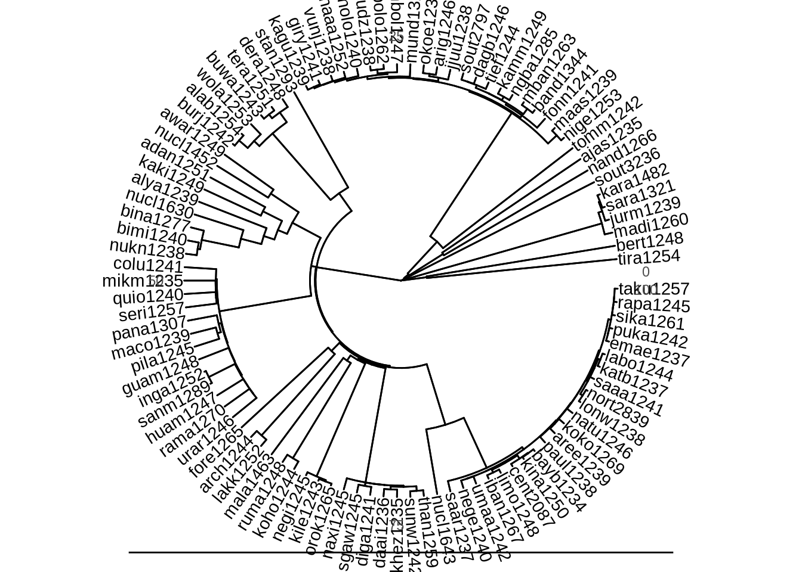
d %>% head(10)# A tibble: 10 × 5
Language_ID GB133 GB193 x y
<chr> <dbl> <dbl> <dbl> <dbl>
1 adan1251 1 2 1 1
2 ajas1235 0 1 0 0
3 alab1254 1 1 0 1
4 alya1239 0 2 1 0
5 arch1244 1 1 0 1
6 aree1239 1 2 1 1
7 arig1246 0 1 0 0
8 awar1249 1 2 1 1
9 band1344 0 1 0 0
10 bayb1234 0 1 0 0Let’s save the data for later use.
write_csv(d, "../data/grambank_vals_pruned.csv")Baseline models (no phylogenetic control)
We begin with models that ignore phylogenetic structure entirely. These serve as baselines and let us confirm that the data contain a signal before asking whether phylogenetic control is warranted.
We first encode the tree as a Stan data list. All subsequent models — vanilla, CTMC, Brownian, and OU — draw from this same data structure.
Just to be on the safe side, we make sure that the branches are in postorder.
pruned_tree <- reorder(pruned_tree, "postorder")Now we code the tree and the data as a data list.
stan_data = list(
N = nrow(d), # Number of languages
Nnodes = length(unique(as.vector(pruned_tree$edge))),
root_node = length(pruned_tree$tip.label) + 1,
x = d$x, # Predictor variable (numeral-noun order)
y = d$y, # Response variable (adnominal demonstrative-noun order)
Nedges = nrow(pruned_tree$edge), # number of edges
edges = pruned_tree$edge, # Edges of the tree,
edge_lengths = pruned_tree$edge.length # Lengths of the edges
)Vanilla logistic regression
We start with a simple logistic regression without any phylogenetic effects, just to see how it works.
The model formula is:
\[ \begin{align} \alpha &\sim \text{Student-t}(3, 0, 2.5)\\ \beta &\sim \mathcal N(0, 2)\\ \mu_x &:= \frac{1}{|x|}\sum_{i}x_i\\ y &\sim \text{Bernoulli}(\text{logit}^{-1}(\alpha + \beta (x-\mu_x))) \end{align} \]
The choice of priors follows the defaults used by brms for logistic regression.
Let’s run this in Stan.
stan_code_vanilla <- "
data {
int<lower=1> N; // Number of observations
vector<lower=0, upper=1>[N] x; // Predictor variable
array[N] int<lower=0,upper=1> y; // Response variable (binary)
}
transformed data {
vector[N] Xc; // centered version of X without an intercept
real means_X; // mean of X before centering
means_X = mean(x);
Xc = x - means_X;
}
parameters {
real alpha; // Intercept
real beta; // Slope
}
model {
// Priors
alpha ~ student_t(3, 0, 2.5);
beta ~ normal(0, 2);
// Likelihood
// y ~ bernoulli_logit(alpha + beta * Xc);
target += bernoulli_logit_lpmf(y | alpha + beta * Xc);
}
generated quantities {
vector[N] log_lik;
array[N] int y_rep; // Posterior predictive samples
array[N] int y_prior; // Prior predictive samples
real alpha_prior;
real beta_prior;
for (n in 1:N) {
// Log-likelihood
log_lik[n] = bernoulli_logit_lpmf(y[n] | alpha + beta * Xc[n]);
// Posterior predictive
y_rep[n] = bernoulli_logit_rng(alpha + beta * Xc[n]);
// Prior predictive: draw new alpha and beta from prior, then simulate
alpha_prior = student_t_rng(3, 0, 2.5);
beta_prior = normal_rng(0, 2);
y_prior[n] = bernoulli_logit_rng(alpha_prior + beta_prior * Xc[n]);
}
}
"
system.time(stan_model_vanilla <- stan_model(model_code = stan_code_vanilla)) user system elapsed
34.219 1.212 36.455 system.time(
fit_vanilla <- sampling(stan_model_vanilla, data = stan_data, iter = 2000, chains = 4)
)print(fit_vanilla, pars = c("alpha", "beta"))Inference for Stan model: anon_model.
4 chains, each with iter=2000; warmup=1000; thin=1;
post-warmup draws per chain=1000, total post-warmup draws=4000.
mean se_mean sd 2.5% 25% 50% 75% 97.5% n_eff Rhat
alpha -0.46 0.00 0.21 -0.88 -0.60 -0.46 -0.32 -0.06 3791 1
beta -1.01 0.01 0.45 -1.90 -1.32 -1.01 -0.68 -0.13 3317 1
Samples were drawn using NUTS(diag_e) at Fri Apr 3 20:35:07 2026.
For each parameter, n_eff is a crude measure of effective sample size,
and Rhat is the potential scale reduction factor on split chains (at
convergence, Rhat=1).mcmc_areas(
as.matrix(fit_vanilla),
pars="beta",
prob = 0.95
)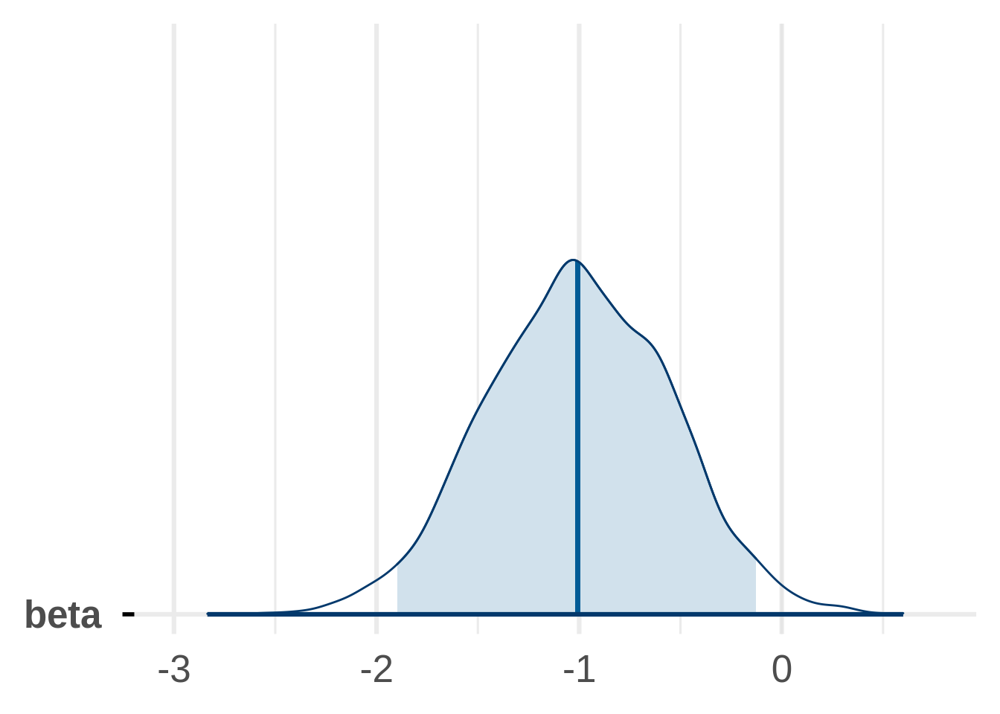
The posterior distribution of the slope \(\beta\) does not include zero, indicating that there is a significant relationship between the predictor variable x and the response variable y. The direction is negative, meaning that N-ANM order disfavors OV order.
For model comparison, we can use the bridgesampling package to compute the log marginal likelihood.
system.time(
capture.output({
log_marginal_likelihood_vanilla_regression <- bridge_sampler(fit_vanilla)
}, file = "/dev/null")
) user system elapsed
0.788 0.018 0.564 print(log_marginal_likelihood_vanilla_regression)Bridge sampling estimate of the log marginal likelihood: -64.79522
Estimate obtained in 4 iteration(s) via method "normal".Now we do visual checks of the model using prior and posterior predictive simulations.
predictive_checks_regression <- function(y_prior, y_rep, stan_data) {
x0_idx <- which(stan_data$x == 0)
x1_idx <- which(stan_data$x == 1)
obs_p_y1_x0 <- mean(stan_data$y[stan_data$x == 0])
obs_p_y1_x1 <- mean(stan_data$y[stan_data$x == 1])
y_prior_df <- as_tibble(y_prior) %>%
setNames(1:ncol(y_prior)) %>%
mutate(sample_no = 1:nrow(.)) %>%
pivot_longer(-sample_no, names_to = "obs", values_to = "y") %>%
mutate(type = "y_prior") %>%
mutate(obs = as.integer(obs))
y_rep_df <- as_tibble(y_rep) %>%
setNames(1:ncol(y_rep)) %>%
mutate(sample_no = 1:nrow(.)) %>%
pivot_longer(-sample_no, names_to = "obs", values_to = "y") %>%
mutate(type = "y_rep") %>%
mutate(obs = as.integer(obs))
y_obs_df <- tibble(
sample_no = 0,
obs = 1:stan_data$N,
y = stan_data$y,
type = "y_obs"
)
df <- bind_rows(y_prior_df, y_rep_df, y_obs_df)
df <- df %>%
mutate(x_obs = stan_data$x[df$obs])
empirical_df <- df %>%
filter(sample_no == 0) %>%
group_by(x_obs) %>%
summarise(p_y1 = mean(y), .groups = "drop")
p <- df %>%
filter(sample_no != 0) %>%
group_by(sample_no, type, x_obs) %>%
summarise(p_y1 = mean(y), .groups = "drop") %>%
ggplot(aes(x = p_y1, fill = type, color = type)) +
geom_density(alpha = 0.3, adjust = 1.2) +
geom_vline(
data = empirical_df,
aes(xintercept = p_y1),
color = "red",
linewidth = 0.7,
linetype = "dashed"
) +
facet_wrap(
~x_obs,
nrow = 1,
labeller = labeller(x_obs = c(`0` = "x = 0", `1` = "x = 1"))
) +
labs(
title = "Predictive Check: Prior vs Posterior vs Observed",
x = "Proportion of y = 1 (per draw)",
y = "Density"
) +
theme_minimal(base_size = 14)
return(p)
}post_vanilla_regression <- rstan::extract(fit_vanilla)
predictive_checks_regression(post_vanilla_regression$y_prior, post_vanilla_regression$y_rep, stan_data)Warning: The `x` argument of `as_tibble.matrix()` must have unique column names if
`.name_repair` is omitted as of tibble 2.0.0.
ℹ Using compatibility `.name_repair`.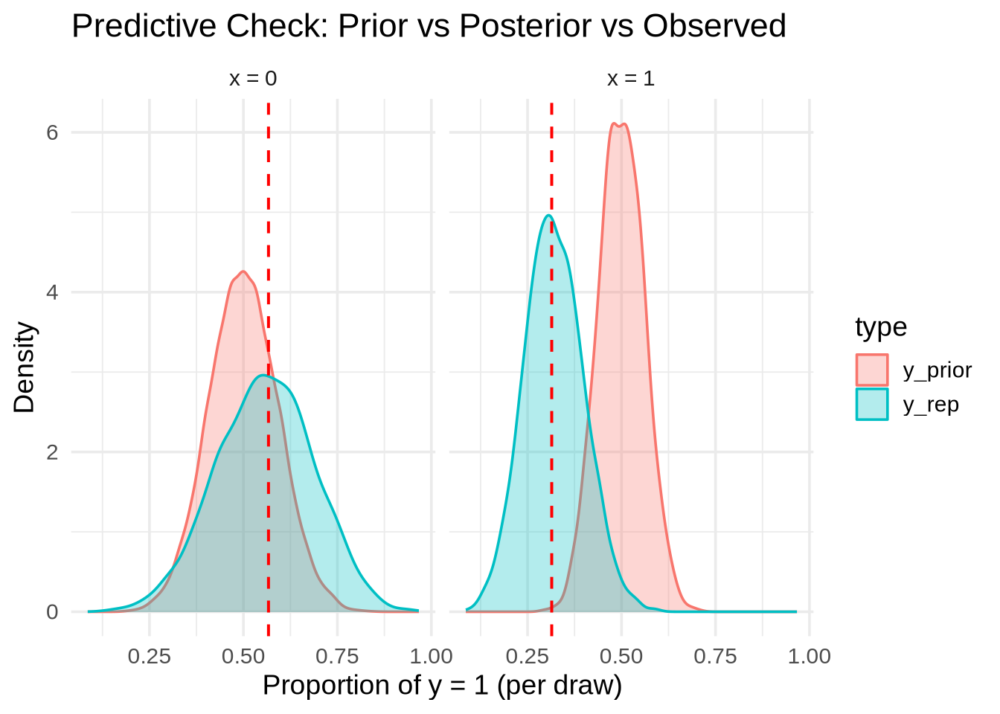
Vanilla logistic correlation study
A regression model assumes an asymmetry between the predictor variable (which is not modeled) and the response variabel (which is modeled). This is not really justified in observational studies where we have not control over the predictor variable. A more appropriate model is one where both variables are generated by some stochastic process.
This can be modeled as follows:
\[ \begin{align} z &\sim \mathcal N(\mu, \Sigma)\\ \Sigma &= \text{diag}(\sigma) \cdot R \cdot \text{diag}(\sigma)\\ R &\sim \text{LKJ}(2)\\ \mu_k &\sim \mathcal N(0, 2)\\ \sigma_k &\sim \text{Lognormal}(0, 1)\\ x &\sim \text{Bernoulli}(\text{logit}^{-1}(z_1))\\ y &\sim \text{Bernoulli}(\text{logit}^{-1}(z_2)) \end{align} \]
Here \(z\) is a bivariate normal variable with mean \(\mu\) and covariance \(\Sigma\). The covariance matrix \(\Sigma\) is parameterized as the product of a diagonal matrix of standard deviations \(\sigma = [\sigma_1, \sigma_2]\) and a correlation matrix \(R\). This allows the two dimensions to have different scales while still modeling their correlation. The correlation between them is given by \(\rho = R_{12} = R_{21}\). The correlation matrix is generated from an LKJ distribution, which is a flexible way to model correlations. The two variables \(x\) and \(y\) are then generated from the first and second components of \(z\), respectively, using the logistic function.
The interesting question is then whether the correlation between \(x\) and \(y\), i.e., \(\rho = r_{21}\), is significantly different from zero. If it is, this indicates that there is a significant correlation between the two variables, which is what we are interested in.
stan_code_vanilla_corr <- "
data {
int<lower=0> N;
array[N] int<lower=0, upper=1> x; // first binary variable
array[N] int<lower=0, upper=1> y; // second binary variable
}
parameters {
vector[2] mu; // Mean of latent variables
vector<lower=0>[2] sigma; // Standard deviation of latent variables
cholesky_factor_corr[2] L_R; // Cholesky factor of correlation matrix
matrix[2, N] z_raw; // Standard normal latent variables
}
transformed parameters {
real rho = L_R[2, 1]; // Extract the correlation coefficient from the Cholesky factor
matrix[2, N] z; // Latent variables with correlation
z = rep_matrix(mu, N) + diag_matrix(sigma) * L_R * z_raw;
}
model {
// Priors
mu ~ normal(0, 2); // Prior for the mean of latent variables
sigma ~ lognormal(0,1); // Prior for the standard deviation of latent variables
L_R ~ lkj_corr_cholesky(2); // Prior for the Cholesky factor of the correlation matrix
to_vector(z_raw) ~ normal(0, 1); // standard normal prior for latent
// Likelihood
for (n in 1:N) {
// x[n] ~ bernoulli_logit(z[1, n]);
// y[n] ~ bernoulli_logit(z[2, n]);
target += bernoulli_logit_lpmf(x[n] | z[1, n]);
target += bernoulli_logit_lpmf(y[n] | z[2, n]);
}
}
generated quantities {
vector[N] log_lik_x;
vector[N] log_lik_y;
array[N] int x_rep;
array[N] int y_rep;
array[N] int x_prior;
array[N] int y_prior;
for (n in 1:N) {
log_lik_x[n] = bernoulli_logit_lpmf(x[n] | z[1, n]);
log_lik_y[n] = bernoulli_logit_lpmf(y[n] | z[2, n]);
x_rep[n] = bernoulli_logit_rng(z[1, n]);
y_rep[n] = bernoulli_logit_rng(z[2, n]);
}
// Prior predictive simulation
{
vector[2] mu_prior;
vector[2] sigma_prior;
mu_prior[1] = normal_rng(0, 2);
mu_prior[2] = normal_rng(0, 2);
sigma_prior[1] = lognormal_rng(0, 1);
sigma_prior[2] = lognormal_rng(0, 1);
matrix[2, 2] R_prior = lkj_corr_rng(2, 2.0); // Sample from LKJ prior
matrix[2, 2] L_prior = cholesky_decompose(R_prior);
matrix[2, N] z_raw_prior;
matrix[2, N] z_prior;
for (n in 1:N)
for (d in 1:2)
z_raw_prior[d, n] = normal_rng(0, 1);
z_prior = rep_matrix(mu_prior, N) + diag_matrix(sigma_prior) * L_prior * z_raw_prior;
for (n in 1:N) {
x_prior[n] = bernoulli_logit_rng(z_prior[1, n]);
y_prior[n] = bernoulli_logit_rng(z_prior[2, n]);
}
}
}
"
system.time(stan_model_vanilla_corr <- stan_model(model_code = stan_code_vanilla_corr)) user system elapsed
41.419 1.126 42.720 system.time(
fit_vanilla_corr <- sampling(
stan_model_vanilla_corr,
data = stan_data,
iter = 2000,
chains = 4,
control = list(adapt_delta = 0.95)
)
)Warning: Bulk Effective Samples Size (ESS) is too low, indicating posterior means and medians may be unreliable.
Running the chains for more iterations may help. See
https://mc-stan.org/misc/warnings.html#bulk-essprint(fit_vanilla_corr, pars = c("mu", "rho", "sigma"))Inference for Stan model: anon_model.
4 chains, each with iter=2000; warmup=1000; thin=1;
post-warmup draws per chain=1000, total post-warmup draws=4000.
mean se_mean sd 2.5% 25% 50% 75% 97.5% n_eff Rhat
mu[1] 1.38 0.03 0.67 0.56 0.93 1.19 1.63 3.14 567 1.00
mu[2] -0.84 0.02 0.59 -2.42 -1.07 -0.71 -0.46 -0.07 671 1.01
rho -0.43 0.01 0.30 -0.89 -0.64 -0.47 -0.27 0.31 690 1.01
sigma[1] 2.00 0.08 1.62 0.20 0.88 1.55 2.64 6.20 437 1.01
sigma[2] 2.67 0.13 2.43 0.25 1.03 1.91 3.57 9.26 351 1.01
Samples were drawn using NUTS(diag_e) at Fri Apr 3 20:36:02 2026.
For each parameter, n_eff is a crude measure of effective sample size,
and Rhat is the potential scale reduction factor on split chains (at
convergence, Rhat=1).mcmc_areas(
as.matrix(fit_vanilla_corr),
pars = "rho",
prob = 0.95
)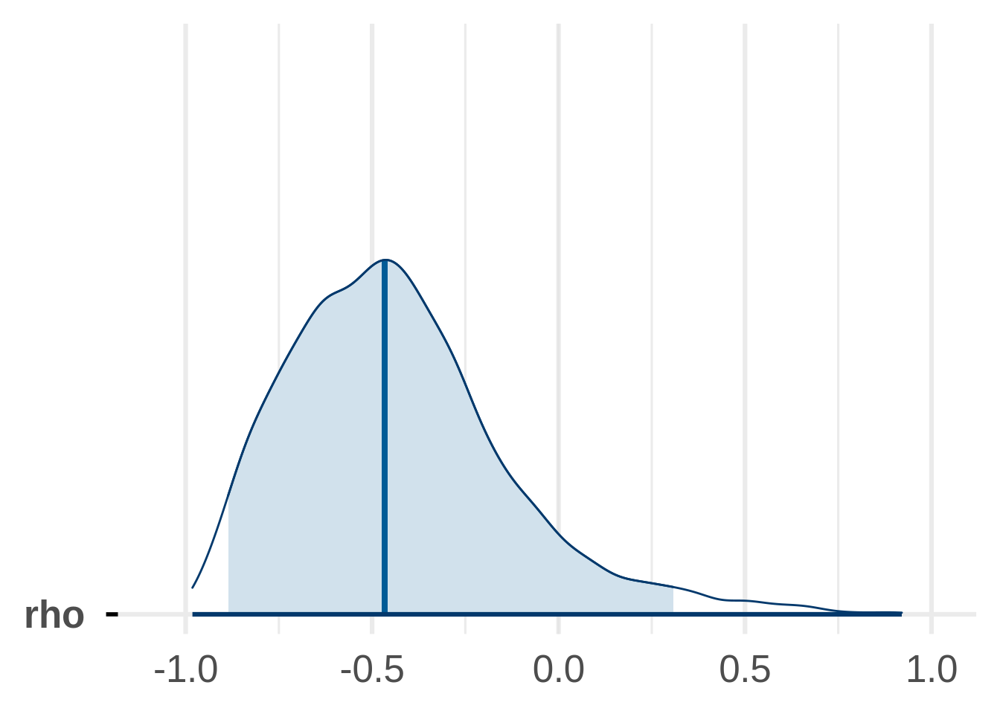
The posterior of \(\rho\) includes 0, so no clear evidence for a correlation.
predictive checks
We compare the behavior of data sampled from the prior, and data sampled from the posterior, to the observed data.
First check: proportion of 1s in the \(x\)-variable
predictive_check_marginal_binary <- function(x_prior, x_rep, x_obs,
varname = "x", bins = 30) {
library(ggplot2)
library(dplyr)
# Compute posterior and prior predictive means (per draw)
post_prop <- rowMeans(x_rep)
prior_prop <- rowMeans(x_prior)
obs_prop <- mean(x_obs)
# Combine into tidy data frame
df <- data.frame(
prop = c(prior_prop, post_prop),
source = rep(c("prior", "posterior"), times = c(length(prior_prop), length(post_prop)))
)
# Plot
ggplot(df, aes(x = prop, fill = source)) +
geom_histogram(position = "identity", alpha = 0.4, bins = bins) +
geom_vline(xintercept = obs_prop, color = "red", linetype = "dashed", linewidth = 1) +
labs(
title = paste("Sanity Check:", varname, "~ Bernoulli"),
x = paste("Proportion of", varname, "= 1 (per draw)"),
y = "Frequency"
) +
scale_fill_manual(values = c("prior" = "skyblue", "posterior" = "seagreen")) +
theme_minimal(base_size = 14)
}post_vanilla_corr <- rstan::extract(fit_vanilla_corr)
predictive_check_marginal_binary(
x_prior = post_vanilla_corr$x_prior,
x_rep = post_vanilla_corr$x_rep,
x_obs = stan_data$x,
varname = "x"
)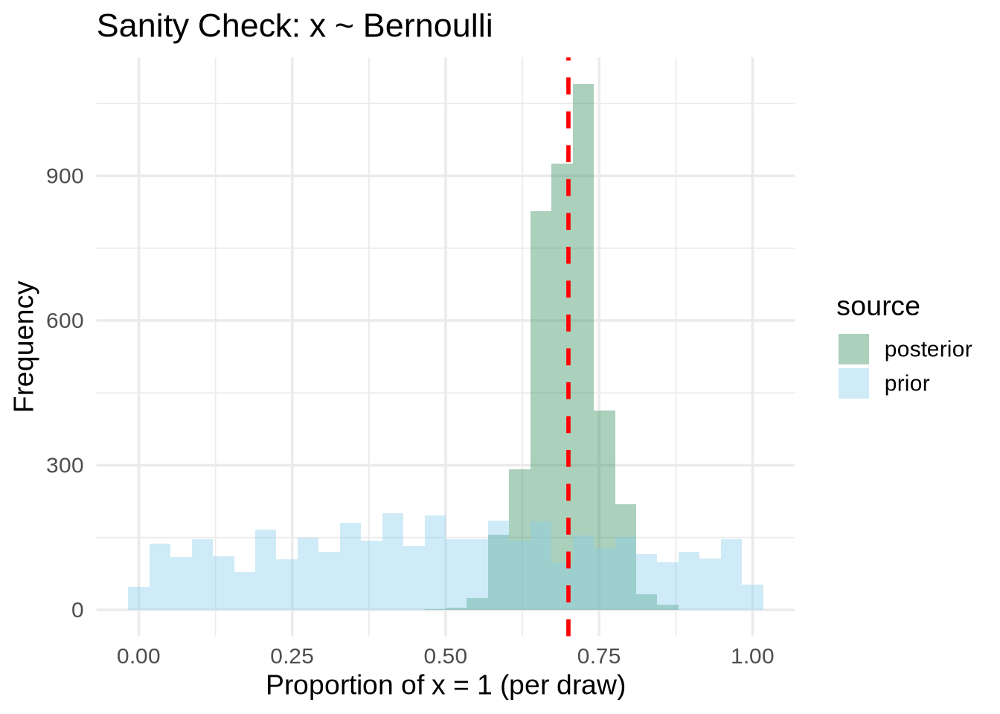
Second check: conditional probability \((y=1|x_{\text{observed}}=0)\) and \((y=1|x_{\text{observed}}=1)\)
predictive_checks_regression(post_vanilla_corr$y_prior, post_vanilla_corr$y_rep, stan_data)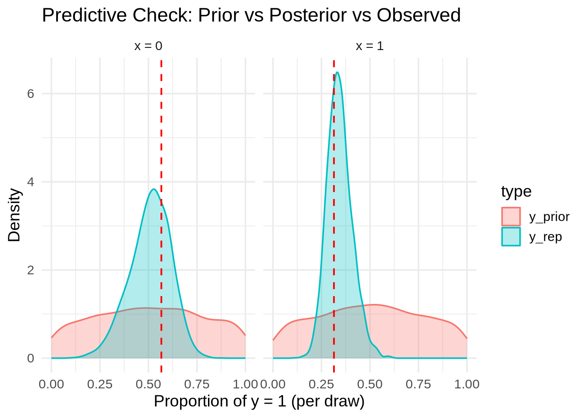
For both checks, the prior is close to a uniform distribution, and the posterior is peaked around the empirical values. This is as it should be.
model comparison
We compute the log marginal likelihood for this model for later use.
system.time(
capture.output({
log_marginal_likelihood_vanilla_corr <- bridge_sampler(fit_vanilla_corr)
}, file = "/dev/null")
) user system elapsed
21.506 0.014 4.651 print(log_marginal_likelihood_vanilla_corr)Bridge sampling estimate of the log marginal likelihood: 57.10021
Estimate obtained in 10 iteration(s) via method "normal".A direct model comparison via Bayes Factor is not possible because the regression model models the distribution of x given y, while the correlation models the joint distribution. However, we can apply Pareto-smoothed leave one out cross-validation if we marginalize over x in the correlation model.
# extract log-likelihood matrix: draws x observations
log_lik1 <- extract_log_lik(fit_vanilla, parameter_name = "log_lik")
log_lik2 <- extract_log_lik(fit_vanilla_corr, parameter_name = "log_lik_y")
# compute LOO
loo1 <- loo(log_lik1)
loo2 <- loo(log_lik2)Warning: Some Pareto k diagnostic values are too high. See help('pareto-k-diagnostic') for details.loo_list <- list(
"vanilla_regression" = loo1,
"vanilla_correlation" = loo2
)
# compare
loo_compare(loo_list) elpd_diff se_diff
vanilla_correlation 0.0 0.0
vanilla_regression -3.3 1.2 So the correlation model is clearly preferred. Both vanilla models ignore phylogenetic structure, however. We now turn to phylogenetically controlled approaches, starting with the method that is most widely used in the field.
Pagel & Meade style test for correlation
The CTMC-based test for correlated evolution developed by Pagel & Meade (2006) is the dominant method in phylogenetic linguistics for assessing whether two binary features co-evolve. It models the joint evolution of \((x, y)\) as transitions among the four combined states \(\{(0,0),(0,1),(1,0),(1,1)\}\) via a continuous-time Markov chain with rate matrix \(Q\). Under the independent model, transition rates satisfy independence constraints (four free parameters); under the dependent model, all eight off-diagonal rates are free. A Bayes factor between the two quantifies evidence for correlated evolution.
We implement this directly in Stan using Felsenstein’s pruning algorithm. One consequence of doing so — rather than using specialized software — is that the full Bayesian workflow comes at no extra cost: prior and posterior predictive checks, Bayes factor comparison via bridge sampling, and leave-one-out cross-validation are all available within the same reproducible script.
The joint state space of the two binary variables is \(\{(x,y)\} = \{(0,0),(0,1),(1,0),(1,1)\}\), which we encode as states \(\{1,2,3,4\}\) via the bijection \(\text{idx} = 2x + y + 1\). The CTMC models transitions among these four joint states.
stan_model_code_ctmc_independent = "
data {
int<lower=1> N;
int<lower=1> Nnodes;
int<lower=1> Nedges;
array[N] int<lower=0, upper=1> x;
array[N] int<lower=0, upper=1> y;
array[Nedges, 2] int<lower=1, upper=Nnodes> edges;
vector<lower=0>[Nedges] edge_lengths;
int<lower=1> root_node;
}
parameters {
simplex[4] rel_rates;
real<lower=0> total_rate;
}
transformed parameters {
matrix[4, 4] Q = rep_matrix(0.0, 4, 4);
Q[1, 2] = total_rate * rel_rates[1];
Q[2, 1] = total_rate * rel_rates[2];
Q[1, 3] = total_rate * rel_rates[3];
Q[3, 1] = total_rate * rel_rates[4];
Q[2, 4] = total_rate * rel_rates[3];
Q[4, 2] = total_rate * rel_rates[4];
Q[3, 4] = total_rate * rel_rates[1];
Q[4, 3] = total_rate * rel_rates[2];
for (i in 1:4) {
Q[i, i] = -sum(Q[i, ]);
}
// stationary-ish distribution via long-time transition
matrix[4, 4] P = matrix_exp(Q * 1e3);
vector[4] stat_dist = to_vector(P[1]);
stat_dist /= sum(stat_dist);
matrix[Nnodes, 4] loglikelihood;
loglikelihood = rep_matrix(0.0, Nnodes, 4);
// tip likelihoods
for (i in 1:N) {
int idx = 2 * x[i] + y[i] + 1;
loglikelihood[i] = rep_row_vector(negative_infinity(), 4);
loglikelihood[i, idx] = 0;
}
// pruning recursion
for (e in 1:Nedges) {
int parent = edges[e, 1];
int child = edges[e, 2];
real t = edge_lengths[e];
matrix[4, 4] Plocal = matrix_exp(Q * t);
for (k in 1:4) {
loglikelihood[parent, k] += log_sum_exp(
to_vector(log(Plocal[k]) + loglikelihood[child])
);
}
}
real ll = log_sum_exp(loglikelihood[root_node] + log(stat_dist)');
}
model {
// priors
rel_rates ~ dirichlet(rep_vector(1.0, 4));
total_rate ~ lognormal(-1, 0.5);
target += ll;
}
generated quantities {
real total_rate_prior = lognormal_rng(-1, 0.5);
vector[4] rel_rates_prior = dirichlet_rng(rep_vector(1.0, 4));
matrix[4, 4] Qprior = rep_matrix(0.0, 4, 4);
Qprior[1, 2] = total_rate_prior * rel_rates_prior[1];
Qprior[2, 1] = total_rate_prior * rel_rates_prior[2];
Qprior[1, 3] = total_rate_prior * rel_rates_prior[3];
Qprior[3, 1] = total_rate_prior * rel_rates_prior[4];
Qprior[2, 4] = total_rate_prior * rel_rates_prior[3];
Qprior[4, 2] = total_rate_prior * rel_rates_prior[4];
Qprior[3, 4] = total_rate_prior * rel_rates_prior[1];
Qprior[4, 3] = total_rate_prior * rel_rates_prior[2];
for (i in 1:4) {
Qprior[i, i] = -sum(Qprior[i, ]);
}
matrix[4, 4] Pprior = matrix_exp(Qprior * 1e3);
vector[4] stat_dist_prior = to_vector(Pprior[1]);
stat_dist_prior /= sum(stat_dist_prior);
array[Nnodes] int<lower=1, upper=4> sim_states;
sim_states[root_node] = categorical_rng(stat_dist_prior);
// Loop backward through post-ordered edges
for (i in 1:Nedges) {
int e = Nedges - i + 1;
int parent = edges[e, 1];
int child = edges[e, 2];
real t = edge_lengths[e];
matrix[4, 4] Plocal = matrix_exp(Qprior * t);
sim_states[child] = categorical_rng(to_vector(Plocal[sim_states[parent]]));
}
array[N] int<lower=0, upper=1> x_prior;
array[N] int<lower=0, upper=1> y_prior;
for (i in 1:N) {
int state = sim_states[i] - 1;
x_prior[i] = state / 2;
y_prior[i] = state % 2;
}
// Posterior predictive for each tip
array[N] real y_log_lik; // Pointwise log-likelihood
vector[4] ll_loo;
array[N] int<lower=0, upper=1> x_rep;
array[N] int<lower=0, upper=1> y_rep;
for (tip in 1:N) {
for (s in 1:4) {
// Recompute likelihood WITHOUT this tip
matrix[Nnodes, 4] loglik_loo = rep_matrix(0.0, Nnodes, 4);
// Set tip likelihoods (excluding tip 'tip')
for (i in 1:N) {
loglik_loo[i] = rep_row_vector(negative_infinity(), 4);
if (i != tip) {
int idx = 2 * x[i] + y[i] + 1;
loglik_loo[i, idx] = 0;
} else {
loglik_loo[i, s] = 0;
}
}
// Pruning recursion (same as model block)
for (e in 1:Nedges) {
int parent = edges[e, 1];
int child = edges[e, 2];
real t = edge_lengths[e];
matrix[4, 4] Plocal = matrix_exp(Q * t);
for (k in 1:4) {
loglik_loo[parent, k] += log_sum_exp(
to_vector(log(Plocal[k]) + loglik_loo[child])
);
}
}
ll_loo[s] = log_sum_exp(loglik_loo[root_node] + log(stat_dist)');
}
int observed_state = 2 * x[tip] + y[tip] + 1;
int same_x_state = 2 * x[tip] + (1 - y[tip]) + 1;
y_log_lik[tip] = ll_loo[observed_state] - log_sum_exp(ll_loo[observed_state] , ll_loo[same_x_state]);
int s_rep = categorical_rng(softmax(ll_loo));
x_rep[tip] = (s_rep - 1) / 2;
y_rep[tip] = (s_rep - 1) % 2;
}
}
"
system.time(stan_model_ctmc_independent <- stan_model(model_code= stan_model_code_ctmc_independent)) user system elapsed
45.546 1.078 46.395 system.time(
fit_ctmc_independent <- sampling(
stan_model_ctmc_independent,
data = stan_data,
iter = 2000,
chains = 4
)
)print(fit_ctmc_independent, pars=c("stat_dist", "rel_rates", "total_rate"))Inference for Stan model: anon_model.
4 chains, each with iter=2000; warmup=1000; thin=1;
post-warmup draws per chain=1000, total post-warmup draws=4000.
mean se_mean sd 2.5% 25% 50% 75% 97.5% n_eff Rhat
stat_dist[1] 0.15 0 0.04 0.08 0.12 0.15 0.18 0.25 3882 1
stat_dist[2] 0.19 0 0.05 0.11 0.16 0.19 0.22 0.30 3290 1
stat_dist[3] 0.29 0 0.06 0.18 0.25 0.29 0.33 0.42 4267 1
stat_dist[4] 0.36 0 0.06 0.24 0.32 0.36 0.41 0.49 4386 1
rel_rates[1] 0.22 0 0.07 0.09 0.17 0.21 0.26 0.37 2357 1
rel_rates[2] 0.18 0 0.06 0.07 0.13 0.17 0.21 0.31 2696 1
rel_rates[3] 0.40 0 0.10 0.21 0.34 0.40 0.47 0.58 2102 1
rel_rates[4] 0.21 0 0.05 0.12 0.17 0.20 0.24 0.31 3291 1
total_rate 0.27 0 0.07 0.16 0.22 0.26 0.32 0.44 2401 1
Samples were drawn using NUTS(diag_e) at Fri Apr 3 20:45:22 2026.
For each parameter, n_eff is a crude measure of effective sample size,
and Rhat is the potential scale reduction factor on split chains (at
convergence, Rhat=1).predictive checks
post_ctmc_independent <- rstan::extract(fit_ctmc_independent)
predictive_check_marginal_binary(
x_prior = post_ctmc_independent$x_prior,
x_rep = post_ctmc_independent$x_rep,
x_obs = stan_data$x,
varname = "x"
)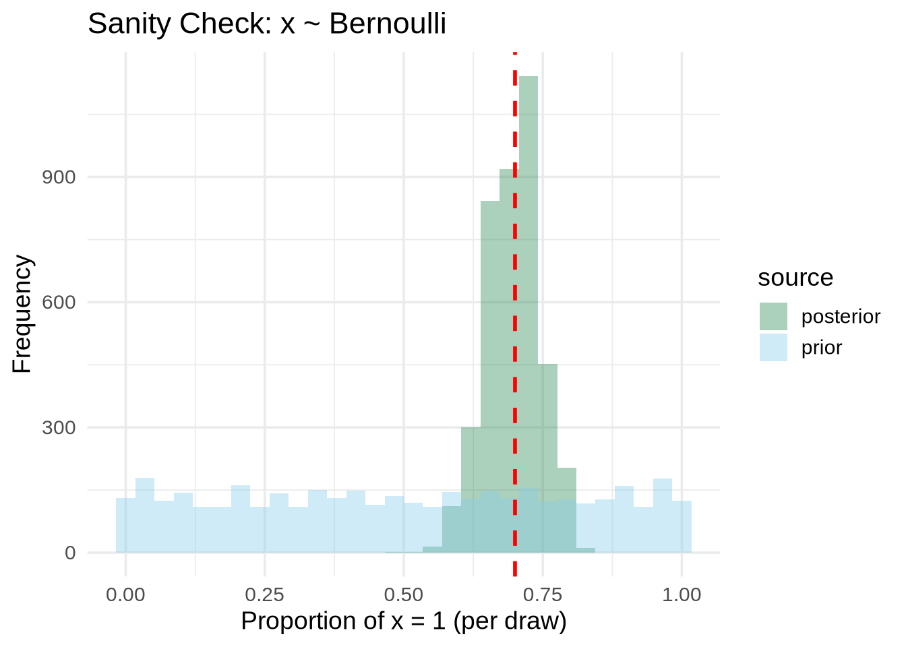
predictive_checks_regression(post_ctmc_independent$y_prior, post_ctmc_independent$y_rep, stan_data)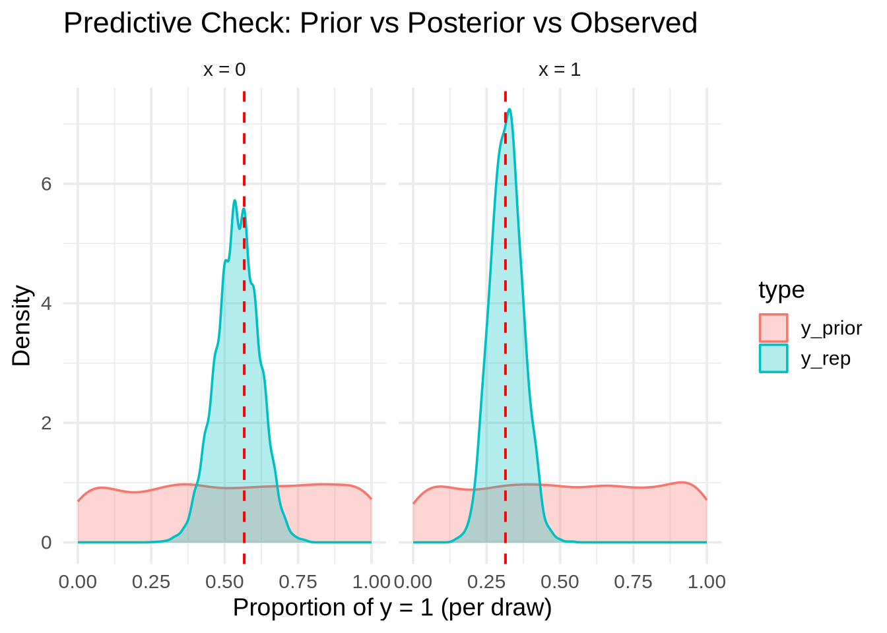
The predictive checks indicate that the prior is already quite informative (which is bad). The posterior is still shifted towards the empirical value.
system.time(
capture.output({
log_marginal_likelihood_ctmc_independent <- bridge_sampler(fit_ctmc_independent)
}, file = "/dev/null")
) user system elapsed
10.350 0.003 10.164 print(log_marginal_likelihood_ctmc_independent)Bridge sampling estimate of the log marginal likelihood: -106.5839
Estimate obtained in 5 iteration(s) via method "normal".stan_model_code_ctmc_dependent = "
data {
int<lower=1> N;
int<lower=1> Nnodes;
int<lower=1> Nedges;
array[N] int<lower=0, upper=1> x;
array[N] int<lower=0, upper=1> y;
array[Nedges, 2] int<lower=1, upper=Nnodes> edges;
vector<lower=0>[Nedges] edge_lengths;
int<lower=1> root_node;
}
parameters {
simplex[8] rel_rates;
real<lower=0> total_rate;
}
transformed parameters {
matrix[4, 4] Q = rep_matrix(0.0, 4, 4);
Q[1, 2] = total_rate * rel_rates[1];
Q[2, 1] = total_rate * rel_rates[2];
Q[1, 3] = total_rate * rel_rates[3];
Q[3, 1] = total_rate * rel_rates[4];
Q[2, 4] = total_rate * rel_rates[5];
Q[4, 2] = total_rate * rel_rates[6];
Q[3, 4] = total_rate * rel_rates[7];
Q[4, 3] = total_rate * rel_rates[8];
for (i in 1:4) {
Q[i, i] = -sum(Q[i, ]);
}
// stationary-ish distribution via long-time transition
matrix[4, 4] P = matrix_exp(Q * 1e3);
vector[4] stat_dist = to_vector(P[1]);
stat_dist /= sum(stat_dist);
matrix[Nnodes, 4] loglikelihood;
loglikelihood = rep_matrix(0.0, Nnodes, 4);
// tip likelihoods
for (i in 1:N) {
int idx = 2 * x[i] + y[i] + 1;
loglikelihood[i] = rep_row_vector(negative_infinity(), 4);
loglikelihood[i, idx] = 0;
}
// pruning recursion
for (e in 1:Nedges) {
int parent = edges[e, 1];
int child = edges[e, 2];
real t = edge_lengths[e];
matrix[4, 4] Plocal = matrix_exp(Q * t);
for (k in 1:4) {
loglikelihood[parent, k] += log_sum_exp(
to_vector(log(Plocal[k]) + loglikelihood[child])
);
}
}
real ll = log_sum_exp(loglikelihood[root_node] + log(stat_dist)');
}
model {
// priors
rel_rates ~ dirichlet(rep_vector(1.0, 8));
total_rate ~ lognormal(-1, 0.5);
target += ll;
}
generated quantities {
real total_rate_prior = lognormal_rng(-1, 0.5);
vector[8] rel_rates_prior = dirichlet_rng(rep_vector(1.0, 8));
matrix[4, 4] Qprior = rep_matrix(0.0, 4, 4);
Qprior[1, 2] = total_rate_prior * rel_rates_prior[1];
Qprior[2, 1] = total_rate_prior * rel_rates_prior[2];
Qprior[1, 3] = total_rate_prior * rel_rates_prior[3];
Qprior[3, 1] = total_rate_prior * rel_rates_prior[4];
Qprior[2, 4] = total_rate_prior * rel_rates_prior[5];
Qprior[4, 2] = total_rate_prior * rel_rates_prior[6];
Qprior[3, 4] = total_rate_prior * rel_rates_prior[7];
Qprior[4, 3] = total_rate_prior * rel_rates_prior[8];
for (i in 1:4) {
Qprior[i, i] = -sum(Qprior[i, ]);
}
matrix[4, 4] Pprior = matrix_exp(Qprior * 1e3);
vector[4] stat_dist_prior = to_vector(Pprior[1]);
stat_dist_prior /= sum(stat_dist_prior);
array[Nnodes] int<lower=1, upper=4> sim_states;
sim_states[root_node] = categorical_rng(stat_dist_prior);
// Loop backward through post-ordered edges
for (i in 1:Nedges) {
int e = Nedges - i + 1;
int parent = edges[e, 1];
int child = edges[e, 2];
real t = edge_lengths[e];
matrix[4, 4] Plocal = matrix_exp(Qprior * t);
sim_states[child] = categorical_rng(to_vector(Plocal[sim_states[parent]]));
}
array[N] int<lower=0, upper=1> x_prior;
array[N] int<lower=0, upper=1> y_prior;
for (i in 1:N) {
int state = sim_states[i] - 1;
x_prior[i] = state / 2;
y_prior[i] = state % 2;
}
// Posterior predictive for each tip
array[N] real y_log_lik; // Pointwise log-likelihood
vector[4] ll_loo;
array[N] int<lower=0, upper=1> x_rep;
array[N] int<lower=0, upper=1> y_rep;
for (tip in 1:N) {
for (s in 1:4) {
// Recompute likelihood WITHOUT this tip
matrix[Nnodes, 4] loglik_loo = rep_matrix(0.0, Nnodes, 4);
// Set tip likelihoods (excluding tip 'tip')
for (i in 1:N) {
loglik_loo[i] = rep_row_vector(negative_infinity(), 4);
if (i != tip) {
int idx = 2 * x[i] + y[i] + 1;
loglik_loo[i, idx] = 0;
} else {
loglik_loo[i, s] = 0;
}
}
// Pruning recursion (same as model block)
for (e in 1:Nedges) {
int parent = edges[e, 1];
int child = edges[e, 2];
real t = edge_lengths[e];
matrix[4, 4] Plocal = matrix_exp(Q * t);
for (k in 1:4) {
loglik_loo[parent, k] += log_sum_exp(
to_vector(log(Plocal[k]) + loglik_loo[child])
);
}
}
ll_loo[s] = log_sum_exp(loglik_loo[root_node] + log(stat_dist)');
}
int observed_state = 2 * x[tip] + y[tip] + 1;
int same_x_state = 2 * x[tip] + (1 - y[tip]) + 1;
y_log_lik[tip] = ll_loo[observed_state] - log_sum_exp(ll_loo[observed_state] , ll_loo[same_x_state]);
int s_rep = categorical_rng(softmax(ll_loo));
x_rep[tip] = (s_rep - 1) / 2;
y_rep[tip] = (s_rep - 1) % 2;
}
}
"
system.time(stan_model_ctmc_dependent <- stan_model(model_code = stan_model_code_ctmc_dependent)) user system elapsed
45.570 1.114 46.527 system.time(
fit_ctmc_dependent <- sampling(
stan_model_ctmc_dependent,
data = stan_data,
iter = 2000,
chains = 4
)
)print(fit_ctmc_dependent, pars=c("total_rate", "rel_rates", "stat_dist"))Inference for Stan model: anon_model.
4 chains, each with iter=2000; warmup=1000; thin=1;
post-warmup draws per chain=1000, total post-warmup draws=4000.
mean se_mean sd 2.5% 25% 50% 75% 97.5% n_eff Rhat
total_rate 0.46 0 0.13 0.26 0.37 0.45 0.54 0.77 2851 1
rel_rates[1] 0.10 0 0.08 0.00 0.04 0.08 0.14 0.28 2614 1
rel_rates[2] 0.07 0 0.05 0.00 0.03 0.06 0.10 0.19 3162 1
rel_rates[3] 0.30 0 0.11 0.08 0.21 0.29 0.38 0.52 2255 1
rel_rates[4] 0.11 0 0.04 0.04 0.08 0.10 0.13 0.20 3548 1
rel_rates[5] 0.10 0 0.07 0.00 0.04 0.08 0.14 0.25 2084 1
rel_rates[6] 0.08 0 0.04 0.02 0.05 0.08 0.11 0.19 2483 1
rel_rates[7] 0.13 0 0.05 0.05 0.09 0.13 0.16 0.24 3251 1
rel_rates[8] 0.12 0 0.05 0.03 0.08 0.12 0.15 0.24 2736 1
stat_dist[1] 0.13 0 0.05 0.06 0.10 0.12 0.16 0.24 5276 1
stat_dist[2] 0.25 0 0.07 0.12 0.19 0.24 0.29 0.41 4555 1
stat_dist[3] 0.31 0 0.07 0.19 0.26 0.31 0.36 0.45 5038 1
stat_dist[4] 0.31 0 0.07 0.19 0.26 0.31 0.36 0.46 4761 1
Samples were drawn using NUTS(diag_e) at Fri Apr 3 20:58:01 2026.
For each parameter, n_eff is a crude measure of effective sample size,
and Rhat is the potential scale reduction factor on split chains (at
convergence, Rhat=1).predictive checks
post_ctmc_dependent <- rstan::extract(fit_ctmc_dependent)predictive_check_marginal_binary(
x_prior = post_ctmc_dependent$x_prior,
x_rep = post_ctmc_dependent$x_rep,
x_obs = stan_data$x,
varname = "x"
)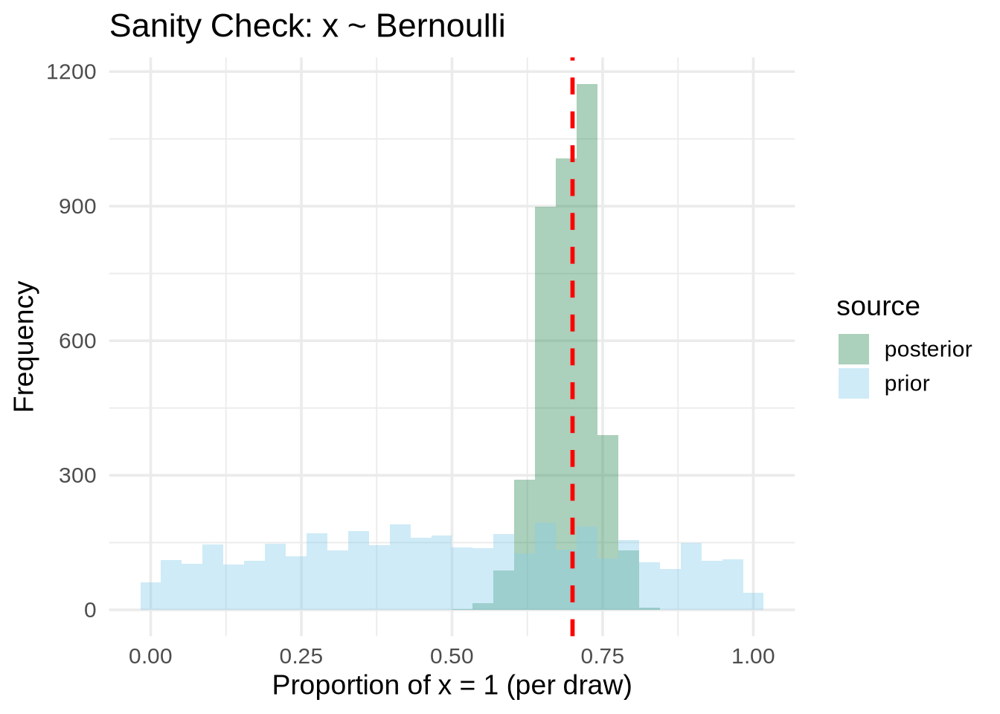
predictive_checks_regression(post_ctmc_dependent$y_prior, post_ctmc_dependent$y_rep, stan_data)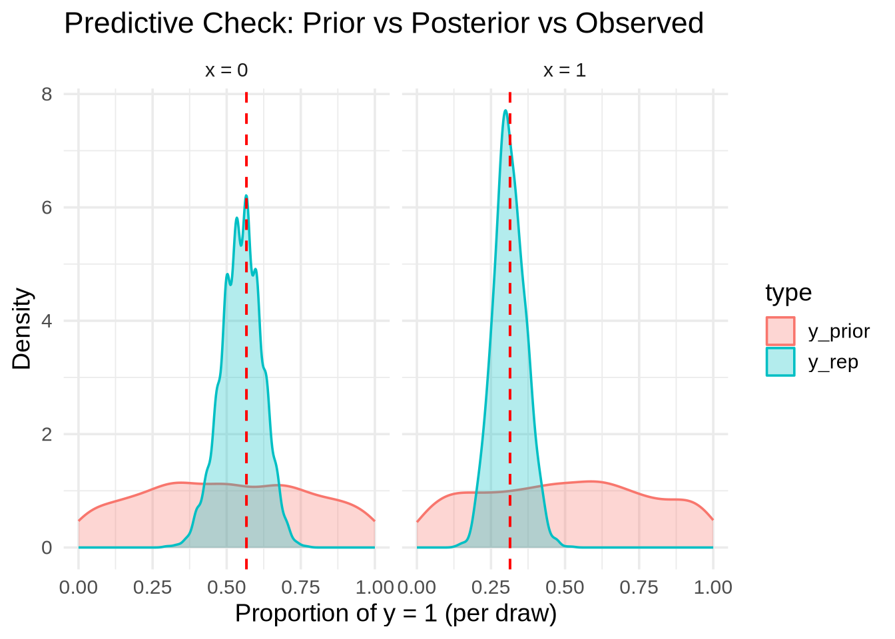
Here the prior is flat. Oddly, there seems to be no difference in the distributions for x=0 and x=1.
model comparison
system.time(
capture.output({
log_marginal_likelihood_ctmc_dependent <- bridge_sampler(fit_ctmc_dependent)
}, file = "/dev/null")
) user system elapsed
11.164 0.005 10.491 print(log_marginal_likelihood_ctmc_dependent)Bridge sampling estimate of the log marginal likelihood: -112.9215
Estimate obtained in 5 iteration(s) via method "normal".And now the Bayes Factor:
(log_marginal_likelihood_ctmc_independent$logml - log_marginal_likelihood_ctmc_dependent$logml)[1] 6.337669So there is evidence in favor of the independent model.
The CTMC approach has one fundamental limitation: it treats typological features as discrete characters with a small number of states. This forces the model to ignore the gradient nature of typological tendencies — the fact that a language is not simply “verb-final” or “not verb-final” but sits on a continuum of probability governed by its history and relatedness to other languages. We now turn to continuous models that avoid this limitation.
Logistic regression with a phylogenetic random effect
The Ornstein-Uhlenbeck process
The OU process is a stochastic process, similar to Brownian motion. The crucial difference is that OU is a “random walk on a leash”. Technically, it is the mixture of a stochastic Brownian motion process and a deterministic trajectory exponentially converging to a mean value. For typological applications, this mean value corresponds to the cross-linguistic attractor: the value a language tends toward over long time scales regardless of ancestry. The OU process is characterized by the following transition distribution: \[ X_t \sim \mathcal N\left(x_0e^{-\lambda t} + \mu (1-e^{-\lambda t}), \frac{\sigma}{\sqrt{2\lambda}}\sqrt{1-e^{-2\lambda t}}\right) \]
The parameters are:
- \(x_0\): the initial value of the process
- \(\mu\): the long-run mean to which the process is attracted (the typological attractor)
- \(\lambda\): the rate of mean-reversion (strength of the attractor)
- \(\sigma\): the diffusion coefficient (instantaneous noise amplitude in the SDE \(dX = \lambda(\mu-X)dt + \sigma\,dW\))
- \(t\): the time at which the process is evaluated
Note that \(\sigma\) here is a diffusion coefficient, not a standard deviation. The equilibrium standard deviation is \(\sigma/\sqrt{2\lambda}\). When \(\lambda = 0\), the OU process reduces to Brownian motion, so Brownian motion is a special (limiting) case of OU rather than a competing framework.
The long-term equilibrium distribution is: \[ X_\infty \sim \mathcal N\!\left(\mu,\, \frac{\sigma}{\sqrt{2\lambda}}\right) \]
We first fit a regression version (one trait as predictor, one as response), then a symmetric correlation version (both traits modeled jointly as co-evolving). We also include Brownian motion as a weaker baseline to show that mean-reversion provides a better fit. The OU models are implemented directly in Stan; the Brownian model uses the brms package for comparison.
We now add a phylogenetic random effect to the logistic regression from above:
\[ \begin{align} \alpha &\sim \text{Student-t}(3, 0, 2.5)\\ \beta &\sim \mathcal N(0, 2)\\ \epsilon &\sim \mathcal N(0, \Sigma)\\ y &\sim \text{Bernoulli}(\text{logit}^{-1}(\alpha + \beta x + \epsilon)) \end{align} \]
The covariance matrix \(\Sigma\) of the phylogenetic random effect is given by
\[ \Sigma_{ij} = \frac{\sigma^2}{2\lambda} e^{-\lambda t_{ij}}, \]
where \(t_{ij}\) is the patristic distance between language \(i\) and language \(j\) in the phylogeny.
A direct implementation of this formula in Stan is possible but inefficient. A better approach directly simulates the evolution of the latent variable \(\epsilon\) along the phylgeny. This means that \(\epsilon\) has a value not only at the tips but also at the internal nodes. The value at the root is sampled from the equilibrium distribution, and the value of the other nodes is drawn from the equation above, repeated here:
\[ X_t \sim \mathcal N\!\left(x_0e^{-\lambda t} + \mu (1-e^{-\lambda t}),\; \frac{\sigma}{\sqrt{2\lambda}}\sqrt{1-e^{-2\lambda t}}\right). \]
\(X_t\) is now the value at the daughter node, \(x_0\) at the mother node, and \(t\) is the branch length. (This matches the Stan code directly: s = sigma * sqrt((1 - exp(-2*lambda*len)) / (2*lambda)).)
stan_model_code_OU_regression = "
data {
int<lower=1> N; // number of tips with data
int<lower=1> Nnodes; // total number of nodes
int<lower=1> Nedges; // number of edges in the tree
vector<lower=0, upper=1>[N] x; // predictor at tips
array[N] int<lower=0, upper=1> y; // binary response at tips
array[Nedges, 2] int<lower=1, upper=Nnodes> edges; // parent → child
vector<lower=0>[Nedges] edge_lengths; // edge lengths
int<lower=1, upper=Nnodes> root_node; // index of root node
}
transformed data {
vector[N] Xc; // centered version of X without an intercept
real means_X; // mean of X before centering
means_X = mean(x);
Xc = x - means_X;
}
parameters {
vector[Nnodes] z_std; // standard normal reparam for latent z
real<lower=0> sigma; // OU diffusion
real<lower=0> lambda; // OU strength
real mu; // OU mean
real alpha; // intercept
real beta; // slope
}
transformed parameters {
vector[Nnodes] z;
// root node
z[root_node] = mu + (sigma / sqrt(2 * lambda)) * z_std[root_node];
// recursive evolution
for (e in 1:Nedges) {
int edge_index = Nedges - e + 1; // reverse order for recursion
int parent = edges[edge_index, 1];
int child = edges[edge_index, 2];
real len = edge_lengths[edge_index];
real decay = exp(-lambda * len);
real s = sigma * sqrt(-expm1(-2 * lambda * len) / (2 * lambda));
real mn = mu + (z[parent] - mu) * decay;
z[child] = mn + s * z_std[child];
}
}
model {
// Priors
alpha ~ student_t(3, 0, 2.5);
beta ~ normal(0, 2);
sigma ~ lognormal(0, 1);
lambda ~ lognormal(0, 1);
mu ~ normal(0, 2);
z_std ~ normal(0, 1); // standard normal prior
// Likelihood
for (i in 1:N) {
# y[i] ~ bernoulli_logit(alpha + beta * Xc[i] + z[i]);
target += bernoulli_logit_lpmf(y[i] | alpha + beta * Xc[i] + z[i]);
}
}
generated quantities {
vector[N] log_lik;
array[N] int y_rep; // posterior predictive
array[N] int y_prior; // prior predictive
// Posterior predictive samples (uses fitted alpha, beta, z)
for (i in 1:N) {
real eta = alpha + beta * Xc[i] + z[i];
log_lik[i] = bernoulli_logit_lpmf(y[i] | eta);
y_rep[i] = bernoulli_logit_rng(eta);
}
// Prior predictive samples: draw alpha, beta, z_prior from prior
{
real alpha_prior = student_t_rng(3, 0, 2.5);
real beta_prior = normal_rng(0, 2);
vector[Nnodes] z_prior_std;
for (j in 1:Nnodes)
z_prior_std[j] = normal_rng(0, 1);
real mu_prior = normal_rng(0, 2);
real lambda_prior = lognormal_rng(0, 1);
real sigma_prior = lognormal_rng(0, 1);
vector[Nnodes] z_prior;
z_prior[root_node] = mu_prior + (sigma_prior / sqrt(2 * lambda_prior)) * z_prior_std[root_node];
for (e in 1:Nedges) {
int edge_index = Nedges - e + 1;
int parent = edges[edge_index, 1];
int child = edges[edge_index, 2];
real len = edge_lengths[edge_index];
real decay = exp(-lambda_prior * len);
real s = sigma_prior * sqrt(-expm1(-2 * lambda_prior * len) / (2 * lambda_prior));
real mn = mu_prior + (z_prior[parent] - mu_prior) * decay;
z_prior[child] = mn + s * z_prior_std[child];
}
for (i in 1:N) {
real eta_prior = alpha_prior + beta_prior * Xc[i] + z_prior[i];
y_prior[i] = bernoulli_logit_rng(eta_prior);
}
}
}
"
system.time(stan_model_OU_regression <- stan_model(model_code = stan_model_code_OU_regression)) user system elapsed
35.343 1.088 36.207 system.time(
fit_OU_regression <- sampling(
stan_model_OU_regression,
data = stan_data,
iter = 2000,
chains = 4,
control = list(adapt_delta = 0.95, max_treedepth = 15)
)
)print(fit_OU_regression, pars = c("mu", "sigma", "lambda", "alpha", "beta"))Inference for Stan model: anon_model.
4 chains, each with iter=2000; warmup=1000; thin=1;
post-warmup draws per chain=1000, total post-warmup draws=4000.
mean se_mean sd 2.5% 25% 50% 75% 97.5% n_eff Rhat
mu 0.36 0.02 1.75 -3.13 -0.83 0.37 1.53 3.78 5239 1
sigma 5.11 0.10 4.03 1.16 2.59 3.94 6.21 16.45 1750 1
lambda 0.11 0.00 0.04 0.04 0.08 0.10 0.13 0.21 2623 1
alpha 0.68 0.04 2.04 -3.13 -0.67 0.63 1.91 5.00 3344 1
beta -0.80 0.03 1.57 -3.88 -1.84 -0.83 0.19 2.45 3742 1
Samples were drawn using NUTS(diag_e) at Fri Apr 3 20:59:24 2026.
For each parameter, n_eff is a crude measure of effective sample size,
and Rhat is the potential scale reduction factor on split chains (at
convergence, Rhat=1).mcmc_areas(
as.matrix(fit_OU_regression),
pars = "beta",
prob = 0.95
)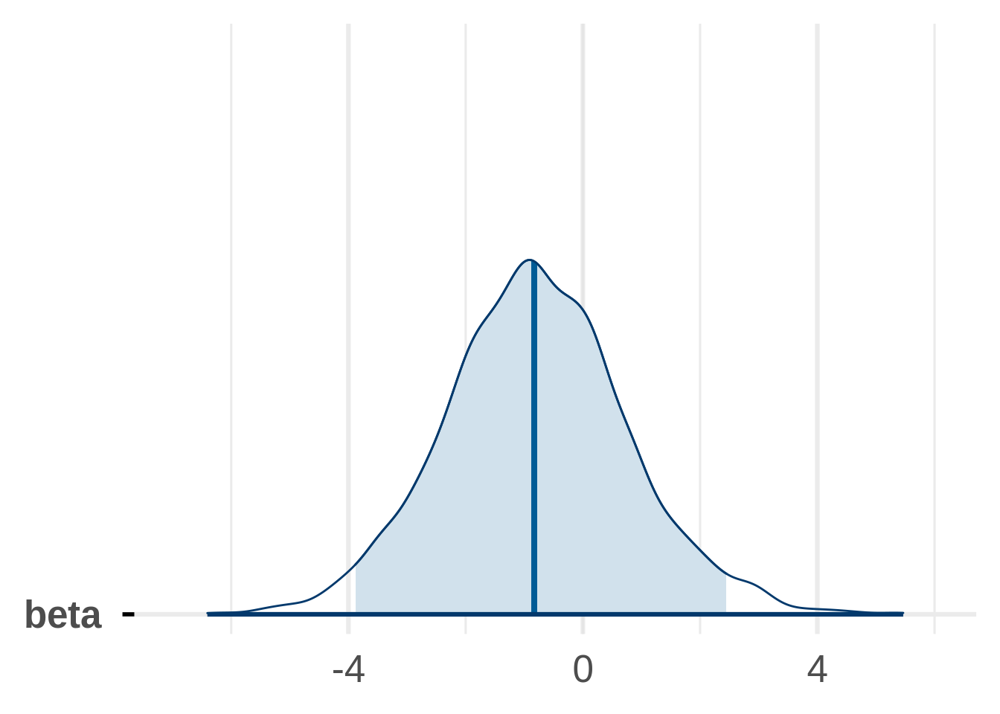
predictive checks
We perform the same predictive checks as for the regression model above.
post_ou_regression <- rstan::extract(fit_OU_regression)
predictive_checks_regression(post_ou_regression$y_prior, post_ou_regression$y_rep, stan_data)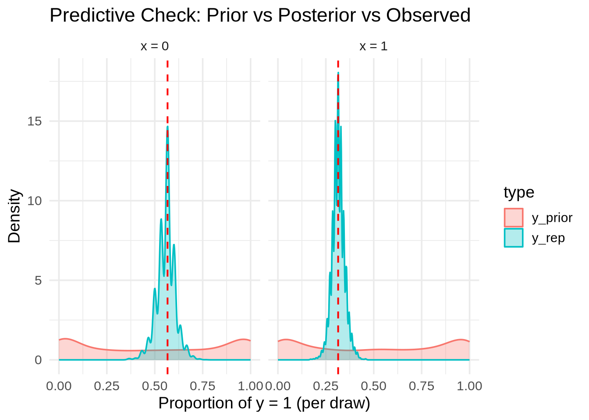
This looks perfect - the prior is essentially flat, and the posterior is peaked around the obverved value.
model comparison
system.time(
capture.output({
log_marginal_likelihood_OU_regression <- bridge_sampler(fit_OU_regression)
}, file = "/dev/null")
) user system elapsed
9.413 0.010 2.809 print(log_marginal_likelihood_OU_regression)Bridge sampling estimate of the log marginal likelihood: 131.3636
Estimate obtained in 8 iteration(s) via method "normal".Now we can compute the Bayes factor between the vanilla regression and the OU phylogenetic regression.
log_marginal_likelihood_OU_regression$logml - log_marginal_likelihood_vanilla_regression$logml[1] 196.1588This is very strong evidence in favor of the OU model.
The HPD for \(\beta\) is very broad and includes 0. So there is no evidence for the significant effect of the order of adnominal property words on verb position.
Brownian motion
Before turning to the full OU model, we fit a Brownian motion baseline. Brownian motion is the \(\lambda \to 0\) limit of OU: it models phylogenetic drift without any restoring force. In brms, a Brownian motion random effect is available via gr(..., cov = A) where A is the phylogenetic covariance matrix. This is convenient, but the brms formulation is difficult to extend — adding geographic random effects, switching to OU, or modifying the covariance structure all require stepping outside the package. The Stan OU implementation in the next section is only marginally more code and offers full flexibility.
We use brms here purely as a convenient baseline implementation of Brownian motion.
A <- ape::vcv(pruned_tree, corr = TRUE)
d$Language_ID <- factor(d$Language_ID, levels = rownames(A))system.time(
fit_brownian_regression <- brm(
formula = y ~ x + (1 | gr(Language_ID, cov = A)),
data = d,
family = bernoulli(link = "logit"),
prior = c(
prior(normal(0, 2), class = "b")
),
data2 = list(A = A),
control = list(adapt_delta = 0.99),
iter = 2000,
cores = 4,
chains = 4,
save_pars = save_pars(all = TRUE)
)
)Compiling Stan program...Start samplingsummary(fit_brownian_regression) Family: bernoulli
Links: mu = logit
Formula: y ~ x + (1 | gr(Language_ID, cov = A))
Data: d (Number of observations: 100)
Draws: 4 chains, each with iter = 2000; warmup = 1000; thin = 1;
total post-warmup draws = 4000
Multilevel Hyperparameters:
~Language_ID (Number of levels: 100)
Estimate Est.Error l-95% CI u-95% CI Rhat Bulk_ESS Tail_ESS
sd(Intercept) 4.16 3.20 1.47 11.05 1.00 914 1255
Regression Coefficients:
Estimate Est.Error l-95% CI u-95% CI Rhat Bulk_ESS Tail_ESS
Intercept 0.51 1.49 -2.51 3.44 1.00 1896 1413
x -0.92 0.82 -2.55 0.74 1.00 4283 3026
Draws were sampled using sampling(NUTS). For each parameter, Bulk_ESS
and Tail_ESS are effective sample size measures, and Rhat is the potential
scale reduction factor on split chains (at convergence, Rhat = 1).mcmc_areas(
as.matrix(fit_brownian_regression),
pars = "b_x",
prob = 0.95
)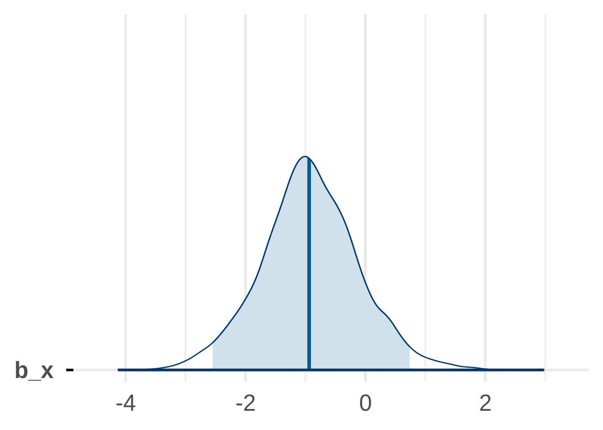
The HPD interval for the slope includes 0, so there is no credible evidence for an impact of x on y.
predictive checks
In a brms model, one cannot do prior predictive simulations while model fitting. Instead, we have to fit the model again, this time with sample_prior = "only".
y_rep_brownian_regression <- posterior_predict(fit_brownian_regression) # matrix: draws × observations
system.time(
fit_prior <- brm(
formula = y ~ x + (1 | gr(Language_ID, cov = A)),
data = d,
family = bernoulli(),
data2 = list(A = A),
prior = c(
prior(normal(0, 2.5), class = "b")
),
sample_prior = "only",
control = list(adapt_delta = 0.95),
cores = 4, chains = 4
)
)Compiling Stan program...Start samplingy_prior_brownian_regression <- posterior_predict(fit_prior)
predictive_checks_regression(y_prior_brownian_regression, y_rep_brownian_regression, stan_data)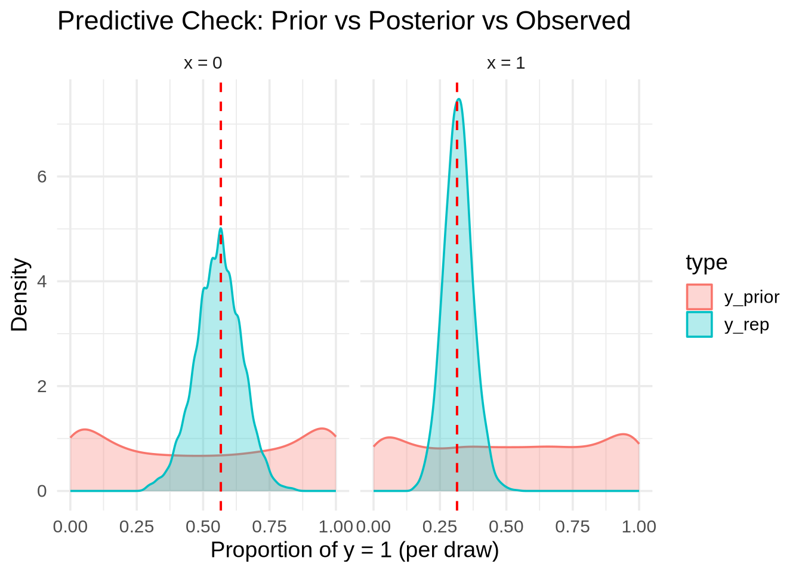
The priors and posteriors look healthy.
model comparison
system.time(
capture.output({
log_marginal_likelihood_brownian_regression <- bridge_sampler(fit_brownian_regression)
}, file = "/dev/null")
) user system elapsed
3.071 0.008 1.428 print(log_marginal_likelihood_brownian_regression)Bridge sampling estimate of the log marginal likelihood: -55.14052
Estimate obtained in 8 iteration(s) via method "normal".log_marginal_likelihood_OU_regression$logml - log_marginal_likelihood_brownian_regression$logml[1] 186.5041The OU model is favored over the Brownian-motion model by a wide margin.
Next we look as PSIS-LOOCV
# extract log-likelihood matrix: draws x observations
log_lik3 <- extract_log_lik(fit_OU_regression, parameter_name = "log_lik")
log_lik4 <- log_lik(fit_brownian_regression)
# compute LOO
loo3 <- loo(log_lik3)Warning: Some Pareto k diagnostic values are too high. See help('pareto-k-diagnostic') for details.loo4 <- loo(log_lik4)Warning: Some Pareto k diagnostic values are too high. See help('pareto-k-diagnostic') for details.loo_list$OU_regression <- loo3
loo_list$brownian_regression <- loo4
# compare
loo_compare(loo_list) elpd_diff se_diff
OU_regression 0.0 0.0
brownian_regression -15.9 2.8
vanilla_correlation -30.5 3.6
vanilla_regression -33.8 3.8 So both Bayes Factor and PSIS-LOOCV favor OU over Brownian motion, and they favor both versions with phylogenetic control over models without phylogenetic control.
The regression models above treat one variable as a predictor and the other as a response — an asymmetry that is hard to justify in observational typological data where neither variable is experimentally controlled. A conceptually more natural model treats both features symmetrically as co-evolving: there is a latent variable governing adjective-noun order and a separate latent variable governing verb position, and both evolve jointly along the phylogeny. If a diachronic dependency exists between the two features, it will manifest as a correlation between their evolutionary trajectories.
This is the bivariate OU correlation model.
The model specification is as follows, where \(N\) is the number of languages, and \(t_{l_1, l_2}\) is the length of from the root of the tree to the most recent common ancestor of \(l_1\) and \(l_2\):
\[ \begin{align} R &\sim \text{LKJ}(2)\\ \Sigma_{(l_1, k_1), (l_2, k_2)} &= R_{k_1, k_2}\cdot \frac{\sigma_{k_1}\sigma_{k_2}}{\lambda_{k_1}+\lambda_{k_2}}\left(1-e^{-(\lambda_{k_1}+\lambda_{k_2})t_{l_1, l_2}}\right) \\ \mu_i &= \mathcal N(\mathbf 0, 2)\\ \sigma_i &= \text{Lognormal}(0,1)\\ \lambda_i &= \text{Lognormal}(0,1)\\ z &\sim \mathcal N(\text{repeat}(\mu, N), \Sigma)\\ x_i &\sim \text{Bernoulli}(\text{logit}^{-1}(z_{i,1}))\\ y_i &\sim \text{Bernoulli}(\text{logit}^{-1}(z_{i,2})) \end{align} \]
The Stan code for this model is in OU_correlation.stan. It is kept in a separate file because it is substantially longer than the regression model: the latent variable \(z\) is now \(2N\)-dimensional (two traits, \(N\) languages), requiring a full bivariate OU recursion and a corresponding prior predictive block.
stan_model_OU_correlation <- stan_model(file = "OU_correlation.stan")system.time(
fit_OU_correlation <- sampling(
stan_model_OU_correlation,
data = stan_data,
iter = 10000,
thin = 10,
chains = 4,
control = list(adapt_delta = 0.95, max_treedepth = 15)
)
)print(fit_OU_correlation, pars=c("mu", "sigma", "lambda", "rho"))Inference for Stan model: anon_model.
4 chains, each with iter=10000; warmup=5000; thin=10;
post-warmup draws per chain=500, total post-warmup draws=2000.
mean se_mean sd 2.5% 25% 50% 75% 97.5% n_eff Rhat
mu[1] 1.78 0.02 1.05 0.01 1.05 1.67 2.36 4.11 1816 1
mu[2] 0.71 0.03 1.22 -1.66 -0.04 0.67 1.44 3.27 1930 1
sigma[1] 3.20 0.05 2.15 0.80 1.81 2.69 4.00 8.56 1603 1
sigma[2] 4.38 0.12 3.92 0.96 2.19 3.33 5.23 14.02 1121 1
lambda[1] 0.21 0.01 0.28 0.05 0.11 0.17 0.23 0.62 1149 1
lambda[2] 0.11 0.00 0.04 0.04 0.08 0.10 0.13 0.20 2067 1
rho -0.27 0.00 0.21 -0.65 -0.43 -0.28 -0.14 0.15 1776 1
Samples were drawn using NUTS(diag_e) at Fri Apr 3 21:07:45 2026.
For each parameter, n_eff is a crude measure of effective sample size,
and Rhat is the potential scale reduction factor on split chains (at
convergence, Rhat=1).mcmc_areas(
as.matrix(fit_OU_correlation),
pars = "rho",
prob = 0.95
)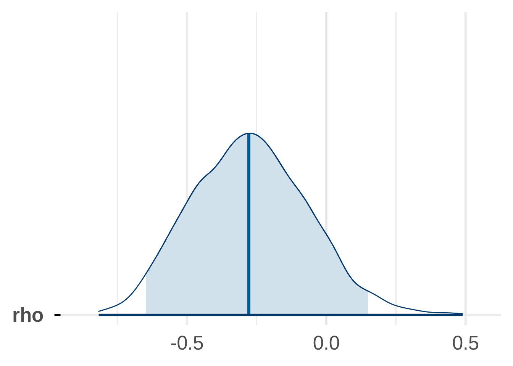
Since the HPD of \(\rho\) includes 0, we conclude that there is no credible evidence for a diachronic correlation between the two variables.
predictive checks
post_OU_correlation <- rstan::extract(fit_OU_correlation)
predictive_check_marginal_binary(
x_prior = post_OU_correlation$x_prior,
x_rep = post_OU_correlation$x_rep,
x_obs = stan_data$x,
varname = "x"
)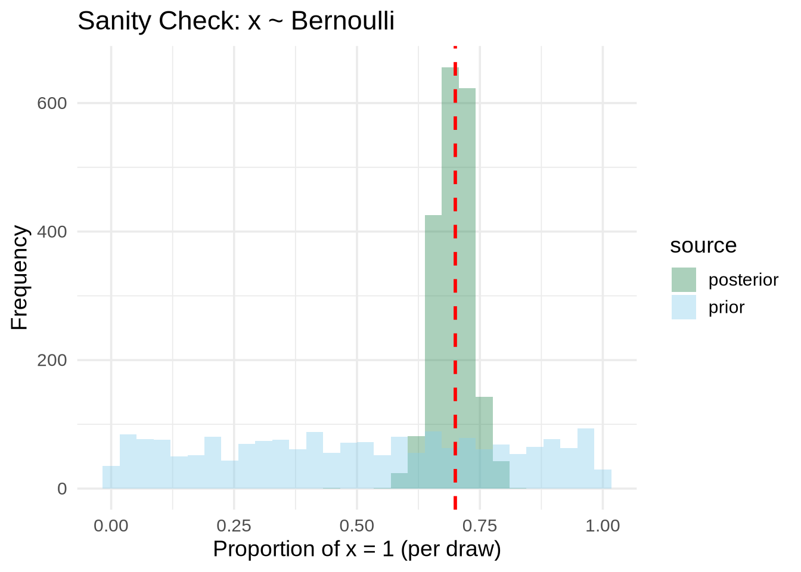
predictive_checks_regression(post_OU_correlation$y_prior, post_OU_correlation$y_rep, stan_data)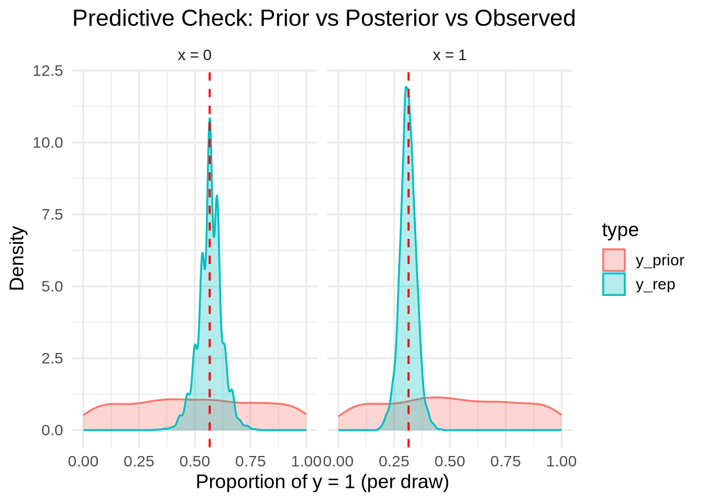
The prior and posterior simulations look okay.
It seems tempting to also use the posterior predictive simulation to estimate the equilibrium probabilities. However, this would be wrong because the posterior predictive simulation also use the posterior of the latent variable z. Instead, we have to use the posterior of the other parameters and to simulate z to obtain the posterior prediction for a copy of the tree, without regard for the real history of the tree.
I added a block to this effect in the Stan code, producing x_replicated_noise and y_replicated_noise.
x_replicated_noise = post_OU_correlation$x_replicated_noise
y_replicated_noise = post_OU_correlation$y_replicated_noise
# Create a function to compute joint probabilities for one sample
joint_freqs <- function(x, y) {
tab <- table(factor(x, levels = 0:1), factor(y, levels = 0:1))
as.vector(tab) / length(x) # returns proportions in order: (0,0), (0,1), (1,0), (1,1)
}
# Apply over all 2000 posterior samples
joint_probs <- t(mapply(joint_freqs,
split(x_replicated_noise, row(x_replicated_noise)),
split(y_replicated_noise, row(y_replicated_noise))))
colnames(joint_probs) <- c("(0,0)", "(0,1)", "(1,0)", "(1,1)")
x_range = c(0,1)
df <- as.data.frame(joint_probs) %>%
mutate(draw = 1:n()) %>%
pivot_longer(-draw, names_to = "Combination", values_to = "Probability")
ggplot(df, aes(x = Probability, fill = Combination)) +
geom_density(alpha = 0.6) +
facet_wrap(~ Combination, scales = "fixed") + # enforce same scale
scale_x_continuous(limits = x_range) + # set common x-axis limits
theme_minimal() +
labs(title = "Equilibrium Distribution of Joint Outcomes",
x = "Estimated Probability",
y = "Density")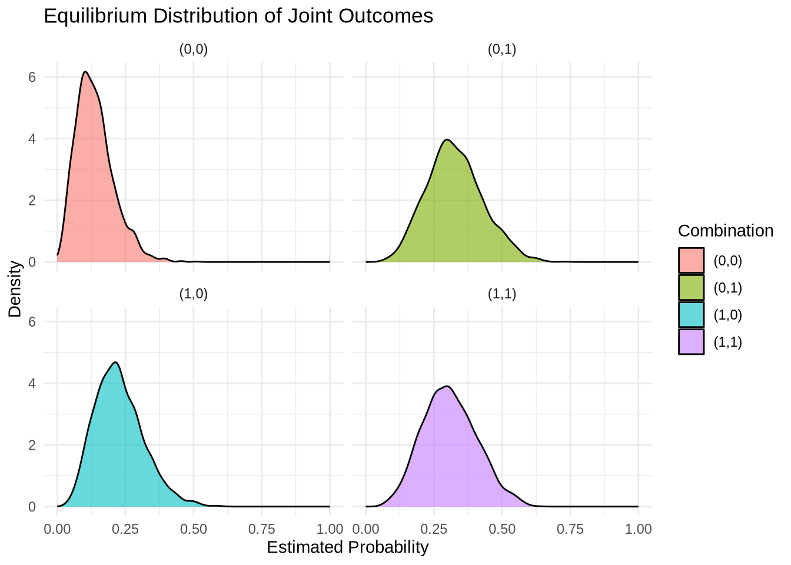
model comparison
Bayes factor:
system.time(
capture.output({
log_marginal_likelihood_OU_correlation <- bridge_sampler(
fit_OU_correlation, silent = TRUE, maxiter = 10000
)
}, file = "/dev/null"
)
)Warning: logml could not be estimated within maxiter, rerunning with adjusted starting value.
Estimate might be more variable than usual. user system elapsed
45.325 0.109 41.182 print(log_marginal_likelihood_OU_correlation)Bridge sampling estimate of the log marginal likelihood: 267.8395
Estimate obtained in 10001 iteration(s) via method "normal".log_marginal_likelihood_OU_correlation$logml - log_marginal_likelihood_vanilla_corr$logml[1] 210.7393Again we find overwhelming evidence in favor of the phylogenetic model.
We can complement model comparison via Bayes Factor with Pareto-smoothed leave-one-out cross-validation.
# extract log-likelihood matrix: draws x observations
log_lik5 <- extract_log_lik(fit_OU_correlation, parameter_name = "log_lik_y")
# compute LOO
loo5 <- loo(log_lik5)Warning: Some Pareto k diagnostic values are too high. See help('pareto-k-diagnostic') for details.loo_list$OU_correlation <- loo5
# compare
loo_compare(loo_list) elpd_diff se_diff
OU_correlation 0.0 0.0
OU_regression -0.3 1.1
brownian_regression -16.2 3.3
vanilla_correlation -30.8 3.4
vanilla_regression -34.1 3.6 The three phylogenetic models perform massively better than the vanilla models. Furthermore if our goal is to predict the verb position of an unseen language from its noun-adjective order and its position in the tree, the OU regression model is superior to the correlation model.
As a nice side effect of the explicit modeling of the diachronic histories, we can plot the posterior means of the latent variables at the internal nodes, thereby visualizing the evolution of the latent variables.
posterior_df <- as_draws_df(fit_OU_correlation)
z_posterior <- posterior_df %>%
spread_draws(z[i, j]) %>%
group_by(i, j) %>%
summarise(mean_z = mean(z), .groups = "drop")
z_adjective <- z_posterior %>%
filter(j == 1) %>%
pull(mean_z)
z_vo <- z_posterior %>%
filter(j == 2) %>%
pull(mean_z)
pruned_tree$node.label <- as.character(
(length(pruned_tree$tip.label) + 1):(length(pruned_tree$tip.label) + pruned_tree$Nnode)
)
tree_plot <- ggtree(pruned_tree)
tree_info <- tree_plot$data
tree_info$node.label <- as.character(tree_info$label)for (i in 1:nrow(tree_info)) {
if (tree_info$isTip[i]) {
# If it's a tip, get the corresponding Glottocode
glottocode <- tree_info$label[i]
# Find the index of the Glottocode in d_ie
index <- which(pruned_tree$tip.label == glottocode)
# Assign the Affix value to the node label
tree_info$node.label[i] <- index
} else {
# If it's not a tip, copy label
tree_info$node.label[i] <- as.integer(tree_info$node.label[i])
}
}
node_data <- tibble(
node.label = as.character(1:length(z_adjective)),
z_adjective = z_adjective,
z_vo = z_vo
)
tree_data <- tree_info %>%
left_join(node_data, by = "node.label")
tree_data <- tree_data %>%
left_join(
rename(select(d, Language_ID, GB193, GB133),
label=Language_ID)
) Joining with `by = join_by(label)`tree_data <- tree_data %>%
mutate(GB193 = factor(GB193)) %>%
mutate(GB133 = factor(GB133))custom_palette <- paletteer_c("scico::roma", 30)p1 <- ggtree(pruned_tree, layout = "circular", branch.length = "none") %<+% tree_data +
geom_tree(aes(color = plogis(z_adjective)), size = 1) +
scale_color_gradientn(colors = custom_palette, name = "p(NAdj)") +
ggnewscale::new_scale_color() +
geom_tippoint(aes(color = GB193), size = 3) +
scale_color_manual(values = c("1" = custom_palette[1], "2" = custom_palette[30])) +
guides(color = guide_legend(override.aes = list(size = 4))) +
theme(
legend.position = "left",
plot.margin = margin(0, 0, 0, 0),
text = element_text(size = 18),
legend.text = element_text(size = 18)
)Warning: Using `size` aesthetic for lines was deprecated in ggplot2 3.4.0.
ℹ Please use `linewidth` instead.
ℹ The deprecated feature was likely used in the ggtree package.
Please report the issue at <https://github.com/YuLab-SMU/ggtree/issues>.p2 <- ggtree(pruned_tree, layout = "circular", branch.length = "none") %<+% tree_data +
geom_tree(aes(color = plogis(z_vo)), size = 1) +
scale_color_gradientn(colors = custom_palette, name = "p(VO)") +
ggnewscale::new_scale_color() +
geom_tippoint(aes(color = GB133), size = 3) +
scale_color_manual(values = c("0" = custom_palette[1], "1" = custom_palette[30])) +
guides(color = guide_legend(override.aes = list(size = 4))) +
theme(
plot.margin = margin(0, 0, 0, 0),
text = element_text(size = 18),
legend.text = element_text(size = 18)
)options(repr.plot.width = 18, repr.plot.height = 10)
plot_grid(p1, p2, ncol = 2, align = "hv", axis = "tb", rel_widths = c(1, 1))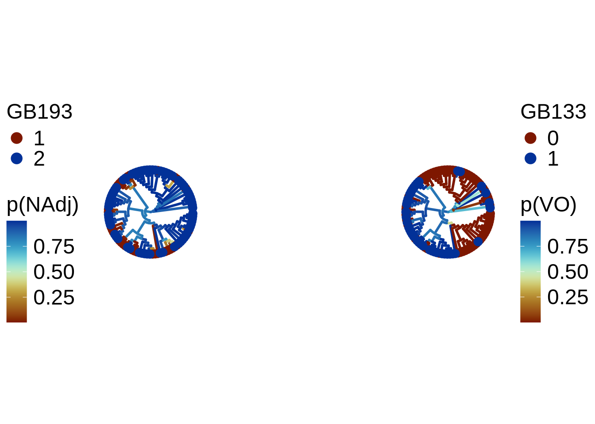
options(repr.plot.width = 12, repr.plot.height = 8) # For base R plots in JupyterAnother advantage of this approach (both the regression and the correlation variant) is that it can easily be combined with family-level or macroarea-level random effects. Also, geographic random effects can easily be added.
More details can be found in my arxiv paper Computational Tyology (https://arxiv.org/abs/2504.15642)
Final comparison
We now compare all models together. First, the Bayes factor between the best OU model and the CTMC approach:
(log_marginal_likelihood_OU_correlation$logml - log_marginal_likelihood_ctmc_independent$logml)[1] 374.4234The OU correlation model is overwhelmingly preferred over the CTMC approach. Now let’s do PSIS-LOOCV for all models.
One methodological note: for the OU and Brownian models, the LOO log-likelihoods are extracted from the posterior samples and the leave-one-out scores are estimated via Pareto-smoothed importance sampling (PSIS), which is an approximation. For the CTMC models, we instead computed exact leave-one-out log-likelihoods directly in the generated quantities block via a full Felsenstein pruning run with each tip held out in turn. Despite the different computation strategies, loo() treats both identically for the final comparison.
# extract log-likelihood matrix: draws x observations
log_lik6 <- extract_log_lik(fit_ctmc_independent, parameter_name = "y_log_lik")
log_lik7 <- extract_log_lik(fit_ctmc_dependent, parameter_name = "y_log_lik")
# compute LOO
loo6 <- loo(log_lik6)
loo7 <- loo(log_lik7)
loo_list$ctmc_independent <- loo6
loo_list$ctmc_dependent <- loo7
# compare
loo_compare(loo_list) elpd_diff se_diff
OU_correlation 0.0 0.0
OU_regression -0.3 1.1
ctmc_independent -9.6 2.3
ctmc_dependent -10.2 2.3
brownian_regression -16.2 3.3
vanilla_correlation -30.8 3.4
vanilla_regression -34.1 3.6 Pareto-smoothed leave-one-out cross-validation leads to a substantially different result than Bayes Factor comparison. The two metrics measure different things:
- The Bayes Factor evaluates the joint model of both variables \((x, y)\) together. A model that fits the joint distribution better — capturing how \(x\) and \(y\) co-evolve — will be favored, regardless of whether it is particularly useful for predicting one variable from the other.
- The LOOIC here measures predictive accuracy for \(y\) alone (verb-final order), given the observed \(x\) (adjective-noun order) for each language. The CTMC models, despite their coarser representation, happen to make relatively sharp predictions about \(y\) given \(x\) for individual left-out languages, because the discrete state space limits the range of predicted probabilities.
In short: the OU correlation model is a better generative model of the data, but the CTMC model is not necessarily worse at the specific prediction task of inferring verb position from word order in a leave-one-out setting.
marginal_loglikelihoods <- tibble(
model = names(loo_list),
type = c(
'regression',
'correlation',
'regression',
'regression',
'correlation',
'correlation',
'correlation'
),
marginal_loglikelhood = c(
log_marginal_likelihood_vanilla_regression$logml,
log_marginal_likelihood_vanilla_corr$logml,
log_marginal_likelihood_OU_regression$logml,
log_marginal_likelihood_brownian_regression$logml,
log_marginal_likelihood_OU_correlation$logml,
log_marginal_likelihood_ctmc_independent$logml,
log_marginal_likelihood_ctmc_dependent$logml
)
)marginal_loglikelihoods %>%
filter(type == "regression") %>%
arrange(desc(marginal_loglikelhood))# A tibble: 3 × 3
model type marginal_loglikelhood
<chr> <chr> <dbl>
1 OU_regression regression 131.
2 brownian_regression regression -55.1
3 vanilla_regression regression -64.8marginal_loglikelihoods %>%
filter(type == "correlation") %>%
arrange(desc(marginal_loglikelhood))# A tibble: 4 × 3
model type marginal_loglikelhood
<chr> <chr> <dbl>
1 OU_correlation correlation 268.
2 vanilla_correlation correlation 57.1
3 ctmc_independent correlation -107.
4 ctmc_dependent correlation -113. The results are consistent across both metrics. Continuous latent-variable models substantially outperform CTMC. Among the continuous models, OU outperforms Brownian motion. The match between the statistical results and the conceptual argument is reassuring: OU is not just computationally convenient but a genuinely better-fitting model for typological data.
Practical recommendation: For binary typological features, the OU correlation model (bivariate, both traits modeled jointly) is the preferred choice when the research question concerns co-evolution or correlation. The OU regression model is appropriate when the question is directional — whether one feature predicts another. In both cases the Stan implementation provided here is straightforward to adapt to other feature pairs, other phylogenies, or additional random effects (geographic, family-level, etc.).
Final thoughts
All the models discussed here use a single phylogeny. It is possible to use a sample of phylogenies to factor in phylogenetic uncertainty in this framework, but it makes the models more complex and the fitting computationally more demanding.
Essentially, what you have to do is:
Construct a 3-dimensional
edgearray (number of edges \(\times\) 2 \(\times\) number of trees), where each layeredge[i,j,k]indicates that there is a branch from nodeito nodejin tree numberk. You have to make sure that all trees are in postorder.Construct a number of edges \(\times\) number of trees matrix
edge_lengthsIn the Stan model, you have to loop over all edges in all trees. So the phylogenetic recursion should look like
for (tr in 1:Ntrees) {
for (e in 1:Nedges) {
int parent = edges[e, 1, tr];
int child = edges[e, 2, tr];
real t = edge_lengths[e, tr];
...
}
}- Inside the model block, add the line
target -= log(Ntrees);Together, this averages over the likelihoods of all trees in the tree sample. Since the likelihoods of all trees in the sample have to be computed, this will slow down model fitting quite a bit.
A working implementation of this multi-tree approach — using the 902 posterior EDGE trees included in the repository — is provided in the companion notebook phylogenetic_OU_regression_julia.qmd, which uses Turing.jl instead of Stan. The Julia version also demonstrates how to use Pigeons.jl for more efficient sampling when the posterior is multi-modal due to phylogenetic uncertainty.
References
Bouckaert, R., Redding, D., Sheehan, O., Kyritsis, T., Gray, R., Jones, K. E., & Atkinson, Q. (2022). Global language diversification is linked to socio-ecology and threat status. SocArXiv. https://osf.io/f8tr6/download
Dryer, M. S. (1992). The Greenbergian word order correlations. Language, 68(1), 81–138. https://doi.org/10.2307/416463
Pagel, M., & Meade, A. (2006). Bayesian analysis of correlated evolution of discrete characters by reversible-jump Markov chain Monte Carlo. The American Naturalist, 167(6), 808–825. https://doi.org/10.1086/503444